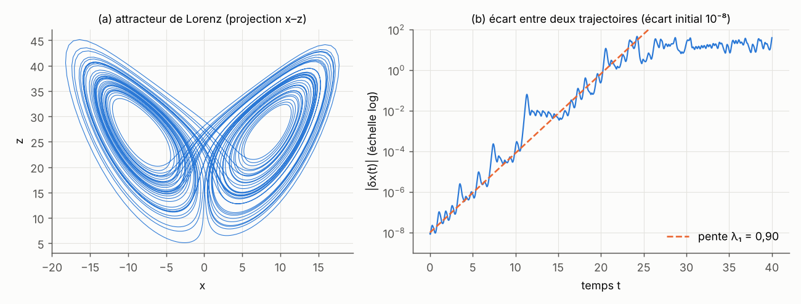

Systèmes dynamiques, bifurcations et mesures invariantes
Préparation · niveau L2 → M2 · ≈ 25 h
Objectifs
Ce module donne le langage dans lequel le stage pose ses questions : un modèle physique est un système dynamique \dot{\mathbf{x}} = F_{\boldsymbol\lambda}(\mathbf{x}), ses régimes changent à des bifurcations quand un paramètre \boldsymbol\lambda (ici Rm, \Gamma…) franchit un seuil, et ce qu’un modèle génératif doit apprendre n’est pas une trajectoire, imprévisible au-delà de quelques temps caractéristiques, mais la mesure invariante \mu_{\boldsymbol\lambda} qui décrit les statistiques du régime. À la fin des vingt-cinq heures prévues, vous saurez :
- énoncer le théorème de Cauchy–Lipschitz, démontrer le lemme de Grönwall et la propriété de groupe du flot, et calculer comment un flot transporte les volumes (formule de Liouville) ;
- trouver les points fixes d’un système, les classer par les valeurs propres de la jacobienne, et démontrer une stabilité à l’aide d’une fonction de Lyapunov ;
- reconnaître les bifurcations nœud-col, fourche (super- et sous-critique) et de Hopf sur leurs formes normales, expliquer pourquoi la symétrie \mathbf{B} \mapsto -\mathbf{B} rend la fourche générique, et démontrer la loi d’amplitude \sqrt{R - R_c} et la frontière de bistabilité 27h^2 = 4r^3 de la fourche imparfaite ;
- calculer numériquement les exposants de Lyapunov du système de Lorenz, relier leur somme à la divergence du champ, et décrire la crise de fusion de deux attracteurs symétriques qui fait apparaître des renversements ;
- définir mesure invariante, ergodicité et mesure physique (SRB), écrire les équations de Liouville et de Fokker–Planck, et démontrer les identités de stationnarité \mathbb{E}_\mu[F\cdot\nabla\varphi + \tfrac{\sigma^2}{2}\Delta\varphi] = 0, dont le bilan d’énergie est un cas particulier ;
- expliquer pourquoi ces identités ne fixent pas le poids relatif de deux attracteurs symétriques (convexité de l’ensemble des mesures invariantes, mesures ergodiques extrémales) ;
- démontrer la formule du temps moyen de premier passage en dimension 1, en déduire la loi d’Arrhenius–Kramers, et estimer une fréquence de renversements par la formule de Rice \mathbb{E}[|\dot X|\,\delta(X)] à partir de la seule loi stationnaire ;
- reproduire, sur le modèle à trois modes de Gissinger (2012), le seuil des renversements, les identités de stationnarité et la formule de Rice qui servent dans l’expérience E1 du dépôt.
Prérequis
Le point de départ est le niveau de deuxième année de licence (L2). Il faut savoir dériver une fonction de plusieurs variables, calculer une matrice jacobienne, diagonaliser une matrice 2\times 2 ou 3\times 3 (valeurs propres réelles ou complexes), résoudre une équation différentielle linéaire à coefficients constants, et connaître les bases des probabilités : espérance, variance, densité, loi gaussienne, loi exponentielle. Les chapitres 5 et 6 utilisent le mouvement brownien de façon heuristique ; aucune connaissance préalable du calcul stochastique n’est supposée.
Côté programmation, il suffit de manipuler des tableaux NumPy et d’écrire une boucle ; SciPy sert pour solve_ivp (intégration d’équations différentielles) et quad (intégrales). Trois schémas interactifs, qui calculent directement dans votre navigateur, accompagnent les chapitres 3, 6 et 7.
Le module Calcul vectoriel et analyse de Fourier fournit les opérateurs \nabla\cdot et \Delta et l’intégration par parties utilisés au chapitre 5. Le module Électromagnétisme, MHD et effet dynamo donne la physique des renversements ; on peut le lire en parallèle. Ce module sert ensuite directement aux modules Probabilités, statistiques et transport optimal (lois, distances entre lois), Modèles génératifs : diffusion et flow matching (le flot d’un champ de vecteurs, l’équation de continuité) et Modèles génératifs sous contraintes physiques (les identités de stationnarité comme contrainte « en loi »).
Plan de travail
Le niveau indique la difficulté : 1 pour les fondations, 2 pour le cœur du module, 3 pour ce qui touche déjà aux questions de recherche du stage. Il ne redescend jamais d’une séance à la suivante.
| Séance | Durée | Niveau | Contenu | Exercices |
|---|---|---|---|---|
| 1 | 3 h | 1 | Chapitre 1 : équations autonomes, Cauchy–Lipschitz, Grönwall, flot, formule de Liouville, portraits de phase | 1, 2 |
| 2 | 3 h | 1 | Chapitre 2 : points fixes, systèmes linéaires, linéarisation, fonctions de Lyapunov ; points fixes de Lorenz et de Gissinger | 3, 4 |
| 3 | 4 h | 2 | Chapitre 3 : nœud-col, fourche, Hopf, symétrie \mathbf{B} \mapsto -\mathbf{B}, loi \sqrt{R - R_c}, imperfection | 5, 6, 7 |
| 4 | 3,5 h | 2 | Chapitre 4 : Lorenz, région piège, exposants de Lyapunov, attracteurs étranges, crises | 13 |
| 5 | 3,5 h | 2 | Chapitre 5, sections 5.1 à 5.4 : mesures invariantes, Krylov–Bogoliubov, Birkhoff, mesure SRB, équations de Liouville et de Fokker–Planck | 15 |
| 6 | 3,5 h | 3 | Chapitre 5, sections 5.5 et 5.6 : forme faible stationnaire, bilan d’énergie, convexité et mesures ergodiques | 8, 9, 12 |
| 7 | 2,5 h | 3 | Chapitre 6 : double puits, temps de premier passage, loi d’Arrhenius–Kramers, formule de Rice | 10, 11 |
| 8 | 2 h | 3 | Chapitre 7 : le modèle de Gissinger, seuil des renversements, statistiques invariantes utiles au stage | 14 |
| Total | 25 h | 7 chapitres | 15 exercices |
Chaque séance se termine par les exercices indiqués, à chercher avant de lire leur solution. Les blocs de code sont courts (moins de 30 secondes chacun sur un ordinateur portable, un seul fil de calcul) : recopiez-les, exécutez-les, puis modifiez les paramètres.
1. Équations autonomes, flot et portraits de phase
Les modèles du stage, de l’oscillateur à trois modes de Gissinger jusqu’aux équations de la MHD discrétisées sur une grille de plusieurs millions de points, ont tous la même forme : l’état à un instant donné détermine entièrement sa vitesse d’évolution. Ce chapitre pose le vocabulaire (champ de vecteurs, orbite, flot), le théorème qui garantit qu’une simulation a un sens (Cauchy–Lipschitz), et la formule qui dit comment un flot déforme les volumes, point de départ de toute la théorie des mesures invariantes.
1.1 Champ de vecteurs, solutions, orbites
Définition 1.1 — Système dynamique autonome Soit F : \mathbb{R}^n \to \mathbb{R}^n une fonction de classe C^1, appelée champ de vecteurs. Le système différentiel autonome associé est
\dot{\mathbf{x}}(t) = F(\mathbf{x}(t)), \qquad \mathbf{x}(0) = \mathbf{x}_0 .
Une solution est une fonction \mathbf{x} de classe C^1 sur un intervalle contenant 0, qui vérifie l’équation. L’espace \mathbb{R}^n est l’espace des phases ; l’ensemble des points \{\mathbf{x}(t)\} parcourus par une solution est son orbite. « Autonome » signifie que F ne dépend pas explicitement du temps. La dimension de l’état est notée n dans ce module (elle est notée D dans les autres modules ; ici, D désigne le dipôle du modèle de Gissinger).
Remarque 1.2 — Tout se ramène à cette forme Une équation d’ordre deux comme celle du pendule, \ddot\theta = -\sin\theta, devient un système d’ordre un en posant \mathbf{x} = (\theta, \omega) avec \dot\theta = \omega et \dot\omega = -\sin\theta. Un système non autonome \dot{\mathbf{x}} = F(\mathbf{x}, t) devient autonome en ajoutant le temps comme variable : \dot\tau = 1. Enfin, une équation aux dérivées partielles comme l’équation d’induction, une fois discrétisée en espace (différences finies, éléments finis, Fourier), est un système de ce type avec n égal au nombre d’inconnues.
Exemple 1.3 — Les trois systèmes qui reviennent dans ce module (a) L’oscillateur amorti \ddot x + \gamma\dot x + x = 0, soit F(x, y) = (y, -x - \gamma y).
(b) Le système de Lorenz (1963), troncature à trois modes de la convection thermique :
\dot x = s\,(y - x), \qquad \dot y = x\,(r - z) - y, \qquad \dot z = xy - b\,z ,
avec les valeurs classiques s = 10 (nombre de Prandtl, souvent noté \sigma ; on réserve ici \sigma au bruit), b = 8/3 et r = 28.
(c) Le modèle de Gissinger (2012), modèle à trois modes des renversements du champ magnétique, avec le quadripôle Q, le dipôle D et un mode de vitesse V :
\dot Q = \mu Q - V D, \qquad \dot D = -\nu D + V Q, \qquad \dot V = \Gamma - V + Q D .
On fixe \mu = 0{,}119 et \nu = 0{,}1 comme Gissinger (2012) ; \Gamma est le paramètre de contrôle. Ce modèle est le fil rouge du module et fait l’objet du chapitre 7.
1.2 Existence, unicité et dépendance continue
Théorème 1.4 — Cauchy–Lipschitz Si F est localement lipschitzienne (c’est le cas si F est de classe C^1), alors pour tout \mathbf{x}_0 il existe une unique solution maximale, définie sur un intervalle ouvert \left]T_-, T_+\right[ contenant 0. De plus, si T_+ < \infty, alors |\mathbf{x}(t)| \to \infty quand t \to T_+ : une solution ne peut s’arrêter en temps fini qu’en explosant.
Preuve. Esquisse. On réécrit le problème sous forme intégrale, \mathbf{x}(t) = \mathbf{x}_0 + \int_0^t F(\mathbf{x}(\tau))\,\mathrm{d}\tau. Sur un intervalle [0, \tau_0] assez court pour que L\tau_0 < 1 (L constante de Lipschitz de F près de \mathbf{x}_0), l’application \mathbf{x} \mapsto \mathbf{x}_0 + \int_0^t F(\mathbf{x}) est contractante pour la norme du maximum, et le théorème du point fixe de Banach donne existence et unicité locales (itérations de Picard). On recolle ensuite les solutions locales ; l’unicité globale découle de la proposition 1.6 ci-dessous. Si la solution restait bornée près de T_+, on pourrait la prolonger au-delà, ce qui contredirait la maximalité. ∎
Lemme 1.5 — Grönwall Soit u une fonction continue et positive sur [0, T] telle que u(t) \le a + L\int_0^t u(\tau)\,\mathrm{d}\tau pour tout t, avec a \ge 0 et L \ge 0. Alors u(t) \le a\,e^{Lt}.
Preuve. Posons w(t) = a + L\int_0^t u. Alors w' = Lu \le Lw, donc (w\,e^{-Lt})' = (w' - Lw)\,e^{-Lt} \le 0, et w(t)\,e^{-Lt} \le w(0) = a. On conclut avec u \le w. ∎
Proposition 1.6 — Dépendance continue des conditions initiales Si F est L-lipschitzienne sur une région qui contient deux solutions \mathbf{x} et \mathbf{y} jusqu’au temps T, alors pour 0 \le t \le T :
|\mathbf{x}(t) - \mathbf{y}(t)| \le |\mathbf{x}_0 - \mathbf{y}_0|\,e^{Lt}.
Preuve. Par la forme intégrale, \mathbf{x}(t) - \mathbf{y}(t) = \mathbf{x}_0 - \mathbf{y}_0 + \int_0^t \big(F(\mathbf{x}) - F(\mathbf{y})\big), donc |\mathbf{x}(t) - \mathbf{y}(t)| \le |\mathbf{x}_0 - \mathbf{y}_0| + L\int_0^t |\mathbf{x} - \mathbf{y}|. Le lemme de Grönwall conclut. Avec \mathbf{x}_0 = \mathbf{y}_0, on obtient l’unicité. ∎
Cette borne dit que deux solutions proches restent proches pendant un temps fini. Elle n’empêche pas l’écart de croître exponentiellement : c’est exactement ce qui se produit dans un système chaotique (chapitre 4), où le facteur e^{Lt} est remplacé par e^{\lambda_1 t}, avec \lambda_1 l’exposant de Lyapunov.
Exemple 1.7 — Explosion et non-unicité L’équation \dot x = x^2 a pour solution x(t) = x_0/(1 - x_0 t), qui explose au temps T_+ = 1/x_0 si x_0 > 0 : F est C^1, mais pas globalement lipschitzienne. L’équation \dot x = 2\sqrt{|x|}, avec x(0) = 0, admet au contraire deux solutions, x \equiv 0 et x(t) = t^2 pour t \ge 0 : la racine carrée n’est pas lipschitzienne en 0, et l’unicité tombe (exercice 2).
Pour les systèmes de ce module, l’explosion est exclue par un argument d’énergie : on montrera au chapitre 4 que les trajectoires de Lorenz entrent dans un ellipsoïde et n’en sortent plus. Une solution qui reste dans un compact est définie pour tout t \ge 0, par la seconde partie du théorème 1.4.
1.3 Le flot et le transport des volumes
Définition 1.8 — Flot Le flot de F est l’application \Phi^t qui envoie une condition initiale sur la valeur au temps t de la solution qui en part : \Phi^t(\mathbf{x}_0) = \mathbf{x}(t). On note \Phi (majuscule) le flot pour réserver \varphi aux fonctions test du chapitre 5.
Proposition 1.9 — Propriété de groupe On a \Phi^0 = \mathrm{Id} et \Phi^{t+s} = \Phi^t \circ \Phi^s partout où ces quantités sont définies. En particulier, \Phi^t est inversible, d’inverse \Phi^{-t}.
Preuve. Fixons s et \mathbf{x}_0. Les deux fonctions t \mapsto \Phi^{t+s}(\mathbf{x}_0) et t \mapsto \Phi^t(\Phi^s(\mathbf{x}_0)) sont solutions de \dot{\mathbf{x}} = F(\mathbf{x}) (pour la première, parce que F ne dépend pas du temps : une solution translatée dans le temps reste une solution) et valent toutes deux \Phi^s(\mathbf{x}_0) en t = 0. Par unicité, elles coïncident. ∎
Théorème 1.10 — Équation variationnelle et formule de Liouville Notons M(t) = D\Phi^t(\mathbf{x}_0) la matrice jacobienne du flot par rapport à la condition initiale. Elle vérifie l’équation variationnelle
\dot M(t) = DF(\mathbf{x}(t))\,M(t), \qquad M(0) = I,
et son déterminant vaut
\det M(t) = \exp\Big(\int_0^t \nabla\cdot F(\mathbf{x}(\tau))\,\mathrm{d}\tau\Big). \tag{1.1}
Par conséquent, pour toute région A de l’espace des phases, \frac{\mathrm{d}}{\mathrm{d}t}\operatorname{vol}\big(\Phi^t(A)\big) = \int_{\Phi^t(A)} \nabla\cdot F\,\mathrm{d}\mathbf{x}.
Preuve. On admet que \Phi^t est dérivable par rapport à \mathbf{x}_0 (c’est vrai pour F de classe C^1). En dérivant \partial_t\Phi^t(\mathbf{x}_0) = F(\Phi^t(\mathbf{x}_0)) par rapport à \mathbf{x}_0 et en échangeant les dérivées, on obtient l’équation variationnelle. La formule de Jacobi pour la dérivée d’un déterminant donne ensuite \frac{\mathrm{d}}{\mathrm{d}t}\det M = \det M\cdot\operatorname{tr}(M^{-1}\dot M) = \det M\cdot\operatorname{tr}\big(DF(\mathbf{x}(t))\big), et la trace de la jacobienne est la divergence : \operatorname{tr} DF = \nabla\cdot F. On intègre cette équation linéaire scalaire pour obtenir (1.1). Pour le volume, le changement de variables \mathbf{x} = \Phi^t(\mathbf{x}_0) donne \operatorname{vol}(\Phi^t(A)) = \int_A \det M(t, \mathbf{x}_0)\,\mathrm{d}\mathbf{x}_0 ; on dérive sous l’intégrale et on refait le changement de variables. ∎
Définition 1.11 — Système conservatif, système dissipatif Un système est conservatif si \nabla\cdot F = 0 : son flot conserve les volumes (systèmes hamiltoniens, fluide parfait). Il est dissipatif si \nabla\cdot F < 0 : les volumes de l’espace des phases se contractent.
Exemple 1.12 — Deux systèmes dissipatifs Pour Lorenz, \nabla\cdot F = \partial_x[s(y - x)] + \partial_y[x(r - z) - y] + \partial_z[xy - bz] = -(s + 1 + b) = -41/3 \approx -13{,}67, une constante. Par (1.1), tout volume est multiplié par e^{-13{,}67} \approx 1{,}2\times 10^{-6} en une unité de temps. Pour Gissinger, \nabla\cdot F = \mu - \nu - 1 = -0{,}981. Dans les deux cas, l’ensemble vers lequel les trajectoires convergent a un volume nul : on retrouvera cette propriété au chapitre 5, où elle interdit à la loi stationnaire d’avoir une densité.
Le code suivant vérifie numériquement la propriété de groupe, la formule (1.1) et la dépendance continue, sur le système de Lorenz.
import numpy as np
from scipy.integrate import solve_ivp
s, r, b = 10.0, 28.0, 8.0 / 3.0 # nombre de Prandtl s, Rayleigh réduit r, facteur géométrique b
def lorenz(t, x):
return [s * (x[1] - x[0]), x[0] * (r - x[2]) - x[1], x[0] * x[1] - b * x[2]]
def jacobienne(x):
return np.array([[-s, s, 0.0],
[r - x[2], -1.0, -x[0]],
[x[1], x[0], -b]])
def flot(x0, t):
"""phi_t(x0), calculé avec une tolérance très fine."""
sol = solve_ivp(lorenz, (0.0, t), x0, method="DOP853", rtol=1e-12, atol=1e-12)
return sol.y[:, -1]
x0 = np.array([1.0, 1.0, 1.0])
# 1) Propriété de groupe : phi_{1,5} = phi_1 o phi_{0,5}
ecart = np.abs(flot(x0, 1.5) - flot(flot(x0, 0.5), 1.0)).max()
print(f"|phi_1.5(x0) - phi_1(phi_0.5(x0))| = {ecart:.1e}")
# 2) Équation variationnelle dM/dt = DF(x(t)) M, M(0) = I, puis formule de Liouville
def etendu(t, y):
x, M = y[:3], y[3:].reshape(3, 3)
return np.concatenate([lorenz(t, x), (jacobienne(x) @ M).ravel()])
div = -(s + 1.0 + b)
for T in (0.5, 1.0, 2.0):
sol = solve_ivp(etendu, (0.0, T), np.concatenate([x0, np.eye(3).ravel()]),
method="DOP853", rtol=1e-12, atol=1e-14)
M = sol.y[3:, -1].reshape(3, 3)
print(f"T = {T:3.1f} : det M(T) = {np.linalg.det(M):.6e} ; exp(T div F) = {np.exp(T * div):.6e}")
# 3) Dépendance continue (Grönwall) : deux conditions initiales distantes de 1e-8
y0 = x0 + np.array([1e-8, 0.0, 0.0])
for T in (1.0, 10.0, 20.0, 30.0):
print(f"T = {T:4.1f} : |phi_T(x0) - phi_T(y0)| = {np.linalg.norm(flot(x0, T) - flot(y0, T)):.2e}")
# sortie :
# |phi_1.5(x0) - phi_1(phi_0.5(x0))| = 2.2e-13
# T = 0.5 : det M(T) = 1.077261e-03 ; exp(T div F) = 1.077261e-03
# T = 1.0 : det M(T) = 1.160492e-06 ; exp(T div F) = 1.160492e-06
# T = 2.0 : det M(T) = 1.346777e-12 ; exp(T div F) = 1.346741e-12
# T = 1.0 : |phi_T(x0) - phi_T(y0)| = 1.12e-08
# T = 10.0 : |phi_T(x0) - phi_T(y0)| = 1.76e-08
# T = 20.0 : |phi_T(x0) - phi_T(y0)| = 9.25e-06
# T = 30.0 : |phi_T(x0) - phi_T(y0)| = 2.21e-01L’écart de 2\times 10^{-13} est l’erreur d’intégration : la propriété de groupe est vérifiée. Le déterminant suit e^{t\,\nabla\cdot F} à six chiffres près ; au temps 2, l’écart relatif de 3\times 10^{-5} vient de la tolérance absolue de l’intégrateur (10^{-14} sur des coefficients de M d’ordre 1), grossière à l’échelle d’un déterminant de 10^{-12} obtenu par compensations. Enfin, l’écart initial de 10^{-8} reste petit jusqu’à t = 10, puis devient d’ordre 1 vers t = 30 : la dépendance est continue à temps fixé, mais l’amplification est exponentielle, comme on le quantifiera au chapitre 4.
1.4 Portraits de phase en dimension 1 et 2
Proposition 1.13 — En dimension 1, pas d’oscillation Pour \dot x = f(x) avec f de classe C^1 sur \mathbb{R}, toute solution est monotone. Une solution bornée converge vers un zéro de f.
Preuve. Si f(x_0) = 0, la solution est constante. Sinon, f(x(t)) ne peut pas s’annuler : si f(x(t_1)) = 0, la solution constante égale à x(t_1) et notre solution coïncideraient en t_1, donc partout par unicité, ce qui contredit f(x_0) \neq 0. Ainsi \dot x garde un signe constant et x est monotone. Si elle est bornée, elle a une limite \ell ; si l’on avait f(\ell) \neq 0, on aurait \dot x \to f(\ell) \neq 0 et x ne pourrait pas converger. Donc f(\ell) = 0. ∎
Le portrait de phase d’une équation scalaire se lit donc sur le signe de f : on marque ses zéros sur la droite et l’on met une flèche vers la droite là où f > 0, vers la gauche là où f < 0. Un zéro vers lequel les flèches convergent est stable ; un zéro qu’elles fuient est instable. Le schéma interactif 1 (chapitre 3) applique cette méthode aux formes normales.
Théorème 1.14 — Poincaré–Bendixson (énoncé) Dans le plan, si une orbite positive reste dans un compact qui ne contient aucun point fixe, alors son ensemble limite est une orbite périodique : soit l’orbite est elle-même périodique, soit elle s’enroule sur une orbite périodique (un cycle limite).
Preuve. Admis ; voir Strogatz (2018) ou Guckenheimer et Holmes (1983). L’idée est qu’une courbe du plan qui ne se recoupe pas (unicité) est piégée par le théorème de Jordan. ∎
Conséquence importante : un système autonome de dimension 2 ne peut pas être chaotique. Il faut au moins trois variables, et c’est pourquoi les modèles minimaux de Lorenz et de Gissinger en ont exactement trois.
Exemple 1.15 — Pendule amorti Pour \dot\theta = \omega, \dot\omega = -\sin\theta - \gamma\omega avec \gamma = 0{,}5, les points fixes sont (k\pi, 0). Les isoclines nulles sont la droite \omega = 0 (où \dot\theta = 0) et la courbe \omega = -\sin(\theta)/\gamma (où \dot\omega = 0). L’énergie E = \omega^2/2 - \cos\theta décroît le long des trajectoires, puisque \dot E = \omega\dot\omega + \sin\theta\,\dot\theta = -\gamma\omega^2 \le 0. Les trajectoires spiralent vers les points (2k\pi, 0), positions basses du pendule ; les points ((2k+1)\pi, 0), positions hautes, sont des selles. Le chapitre 2 explique comment lire ces natures sur les valeurs propres.
Ce qu’il faut retenir — chapitre 1
- Un système autonome \dot{\mathbf{x}} = F(\mathbf{x}) avec F de classe C^1 a une unique solution maximale (Cauchy–Lipschitz), qui n’est interrompue que par une explosion.
- Grönwall : |\mathbf{x}(t) - \mathbf{y}(t)| \le |\mathbf{x}_0 - \mathbf{y}_0|\,e^{Lt} ; la dépendance est continue, mais l’amplification peut être exponentielle.
- Le flot vérifie \Phi^{t+s} = \Phi^t\circ\Phi^s ; sa jacobienne obéit à \dot M = DF\,M et \det M(t) = \exp\int_0^t \nabla\cdot F (Liouville).
- Lorenz (\nabla\cdot F = -41/3) et Gissinger (\nabla\cdot F = \mu - \nu - 1) contractent les volumes.
- En dimension 1, les solutions sont monotones ; en dimension 2, pas de chaos (Poincaré–Bendixson) ; il faut n \ge 3.
2. Points fixes, linéarisation et stabilité
Un seuil de dynamo est l’instant où l’état sans champ magnétique, \mathbf{B} = \mathbf{0}, cesse d’être stable : le calculer, c’est faire une analyse de stabilité linéaire. L’expérience E3 du dépôt mesure ainsi le taux de croissance de la dynamo cinématique ABC en fonction de Rm, c’est-à-dire la plus grande partie réelle des valeurs propres de l’opérateur d’induction linéarisé (voir le rapport). Ce chapitre donne les outils de cette analyse en dimension finie.
2.1 Points fixes et notions de stabilité
Définition 2.1 — Point fixe, stabilité Un point fixe (ou point d’équilibre) est un point \mathbf{x}^* tel que F(\mathbf{x}^*) = \mathbf{0} : la solution qui en part est constante. Il est
- stable (au sens de Lyapunov) si pour tout \varepsilon > 0 il existe \delta > 0 tel que |\mathbf{x}_0 - \mathbf{x}^*| < \delta entraîne |\Phi^t(\mathbf{x}_0) - \mathbf{x}^*| < \varepsilon pour tout t \ge 0 ;
- asymptotiquement stable s’il est stable et si de plus \Phi^t(\mathbf{x}_0) \to \mathbf{x}^* pour \mathbf{x}_0 assez proche ;
- instable s’il n’est pas stable.
2.2 Systèmes linéaires
Pour \dot{\mathbf{x}} = A\mathbf{x} avec A matrice constante, la solution est \mathbf{x}(t) = e^{tA}\mathbf{x}_0, où e^{tA} = \sum_k t^k A^k / k!. Si A = P\Lambda P^{-1} est diagonalisable, e^{tA} = P\,e^{t\Lambda}P^{-1} : chaque mode propre évolue comme e^{\lambda_k t}, et la partie réelle de \lambda_k fixe sa croissance ou sa décroissance.
Théorème 2.2 — Stabilité d’un système linéaire L’origine est asymptotiquement stable pour \dot{\mathbf{x}} = A\mathbf{x} si et seulement si toutes les valeurs propres de A ont une partie réelle strictement négative. Si l’une d’elles a une partie réelle strictement positive, l’origine est instable.
Preuve. Cas diagonalisable. Notons \alpha = \max_k \operatorname{Re}\lambda_k. Alors |e^{tA}\mathbf{x}_0| \le \|P\|\,\|P^{-1}\|\,e^{\alpha t}|\mathbf{x}_0|, qui tend vers 0 si \alpha < 0, et qui est petit uniformément en t si |\mathbf{x}_0| est petit : stabilité asymptotique. Si \operatorname{Re}\lambda_k > 0, la solution issue de \varepsilon\,\mathbf{v}_k (vecteur propre, ou partie réelle d’un vecteur propre complexe) croît comme e^{t\operatorname{Re}\lambda_k} pour tout \varepsilon > 0 : instabilité. Dans le cas général, la forme de Jordan fait apparaître des termes t^m e^{\lambda t}, et la même conclusion vaut en remplaçant \alpha par n’importe quel \alpha' > \alpha. Si toutes les parties réelles sont \le 0 et que l’une est nulle, le mode correspondant ne décroît pas : il n’y a pas de stabilité asymptotique. ∎
En dimension 2, les valeurs propres ne dépendent que de la trace \tau = \operatorname{tr}A et du déterminant \Delta = \det A : \lambda = \big(\tau \pm \sqrt{\tau^2 - 4\Delta}\big)/2. On en déduit la classification suivante.
| Condition | Valeurs propres | Nature de l’origine |
|---|---|---|
| \Delta < 0 | réelles, de signes opposés | selle (toujours instable) |
| \Delta > 0, \tau^2 > 4\Delta | réelles, de même signe | nœud, stable si \tau < 0 |
| \Delta > 0, \tau^2 < 4\Delta | complexes conjuguées | foyer (spirale), stable si \tau < 0 |
| \Delta > 0, \tau = 0 | imaginaires pures | centre (orbites fermées) |
Exemple 2.3 — Oscillateur amorti Pour \ddot x + \gamma\dot x + x = 0, on a A = \begin{pmatrix} 0 & 1 \\ -1 & -\gamma\end{pmatrix}, donc \tau = -\gamma et \Delta = 1. Pour 0 < \gamma < 2, \tau^2 < 4\Delta : l’origine est un foyer stable, l’oscillation s’amortit en e^{-\gamma t/2}. Pour \gamma > 2, c’est un nœud stable (régime apériodique). Pour \gamma = 0, c’est un centre.
2.3 Linéarisation autour d’un point fixe
Près d’un point fixe, on écrit \mathbf{x} = \mathbf{x}^* + \mathbf{y} et F(\mathbf{x}^* + \mathbf{y}) = A\mathbf{y} + R(\mathbf{y}), avec A = DF(\mathbf{x}^*) et un reste |R(\mathbf{y})| \le C|\mathbf{y}|^2 si F est de classe C^2.
Théorème 2.4 — Stabilité linéarisée Si toutes les valeurs propres de A = DF(\mathbf{x}^*) ont une partie réelle strictement négative, \mathbf{x}^* est asymptotiquement stable, et la convergence est exponentielle. Si l’une d’elles a une partie réelle strictement positive, \mathbf{x}^* est instable.
Preuve. Première affirmation. Comme les valeurs propres de A sont de parties réelles négatives, l’intégrale P = \int_0^\infty e^{tA^{\mathsf T}}e^{tA}\,\mathrm{d}t converge (théorème 2.2). La matrice P est symétrique définie positive, et en intégrant \frac{\mathrm{d}}{\mathrm{d}t}\big(e^{tA^{\mathsf T}}e^{tA}\big) = A^{\mathsf T}e^{tA^{\mathsf T}}e^{tA} + e^{tA^{\mathsf T}}e^{tA}A de 0 à \infty, on trouve l’équation de Lyapunov A^{\mathsf T}P + PA = -I. Posons V(\mathbf{y}) = \mathbf{y}^{\mathsf T}P\mathbf{y}. Le long d’une solution,
\dot V = \mathbf{y}^{\mathsf T}(A^{\mathsf T}P + PA)\,\mathbf{y} + 2\,\mathbf{y}^{\mathsf T}P\,R(\mathbf{y}) \le -|\mathbf{y}|^2 + 2\|P\|\,C\,|\mathbf{y}|^3 .
Pour |\mathbf{y}| \le \rho_0 = 1/(4\|P\|C), on a donc \dot V \le -|\mathbf{y}|^2/2 \le -V/(2\lambda_{\max}(P)). Choisissons c = \lambda_{\min}(P)\,\rho_0^2 : l’ensemble \{V \le c\} est contenu dans la boule de rayon \rho_0, et comme V y décroît, une solution qui part de cet ensemble ne peut pas en sortir. Le long d’une telle solution, V décroît exponentiellement ; comme V \ge \lambda_{\min}(P)|\mathbf{y}|^2, \mathbf{y} aussi. La seconde affirmation (instabilité) se démontre avec une construction voisine ; on l’admet. ∎
Remarque 2.5 — Points hyperboliques, théorème de Hartman–Grobman Un point fixe est hyperbolique si aucune valeur propre de DF(\mathbf{x}^*) n’a de partie réelle nulle. Le théorème de Hartman–Grobman (admis) affirme qu’au voisinage d’un point hyperbolique, le portrait de phase est une déformation continue de celui du système linéarisé. Quand une valeur propre a une partie réelle nulle, la linéarisation ne conclut pas : c’est précisément la situation des bifurcations (chapitre 3).
Exemple 2.6 — Les points fixes de Lorenz L’origine est toujours un point fixe. En O, la jacobienne a pour valeurs propres -b et les racines de \lambda^2 + (s + 1)\lambda + s(1 - r) = 0. Pour r < 1, toutes sont négatives : O est stable. Pour r > 1, le produit des racines s(1 - r) est négatif, donc l’une est positive : O devient une selle. Au même moment apparaissent deux points fixes symétriques C_\pm = \big(\pm\sqrt{b(r-1)}, \pm\sqrt{b(r-1)}, r - 1\big), stables tant que r < r_H = s(s + b + 3)/(s - b - 1) \approx 24{,}74 (formule admise ; on la vérifie numériquement ci-dessous). À r = 28, les trois points fixes sont instables, et pourtant les trajectoires restent bornées (proposition 4.1) : hormis celles, exceptionnelles, qui tombent exactement sur la variété stable d’un point fixe, elles ne convergent vers aucun équilibre et oscillent indéfiniment, de façon périodique ou chaotique.
Exemple 2.7 — Les points fixes du modèle de Gissinger Le point O = (0, 0, \Gamma) est fixe. La jacobienne en un point (Q, D, V) est
DF = \begin{pmatrix} \mu & -V & -D \\ V & -\nu & Q \\ D & Q & -1 \end{pmatrix},
qui vaut en O un bloc \begin{pmatrix} \mu & -\Gamma \\ \Gamma & -\nu \end{pmatrix} suivi de la valeur propre -1. Le bloc a pour trace \mu - \nu et pour déterminant \Gamma^2 - \mu\nu, d’où \lambda_{1,2} = \frac{\mu - \nu}{2} \pm \frac12\sqrt{(\mu + \nu)^2 - 4\Gamma^2} (Gissinger, 2012). Avec \mu = 0{,}119, \nu = 0{,}1 et \Gamma = 0{,}9, on obtient 0{,}0095 \pm 0{,}893\,i : O est un foyer à peine instable, l’amplitude d’une oscillation autour de O ne double qu’en \ln 2/0{,}0095 \approx 73 unités de temps.
Pour les autres points fixes, on combine \mu Q = VD et \nu D = VQ : si QD \ne 0, on obtient \mu\nu\,QD = V^2\,QD, donc V = \pm\sqrt{\mu\nu}. Avec V = -\sqrt{\mu\nu}, l’équation \dot V = 0 donne Q^2 = \nu + \Gamma\sqrt{\nu/\mu} et D = -Q\sqrt{\mu/\nu} : ce sont les points N_\pm, qui existent toujours. Avec V = +\sqrt{\mu\nu}, on obtient Q^2 = \nu - \Gamma\sqrt{\nu/\mu}, positif seulement si \sqrt{\mu\nu} > \Gamma : ces points M_\pm n’existent pas ici, car \sqrt{\mu\nu} \approx 0{,}109 < 0{,}9.
Le code suivant calcule ces valeurs propres et localise numériquement la bifurcation de Hopf de Lorenz.
import numpy as np
# --- Lorenz : origine et C+ = (a, a, r - 1), a = sqrt(b (r - 1)) ---
s, b = 10.0, 8.0 / 3.0
def jac_lorenz(x, r):
return np.array([[-s, s, 0.0], [r - x[2], -1.0, -x[0]], [x[1], x[0], -b]])
for r in (0.5, 10.0, 28.0):
vp0 = np.linalg.eigvals(jac_lorenz(np.zeros(3), r))
texte = f"r = {r:4.1f} : max Re(vp) en O = {vp0.real.max():+.3f}"
if r > 1:
a = np.sqrt(b * (r - 1))
vpC = np.linalg.eigvals(jac_lorenz(np.array([a, a, r - 1]), r))
texte += f" ; en C+ = {vpC.real.max():+.3f}"
print(texte)
# Seuil de Hopf de C+ : balayage en r, comparé à la formule fermée
rs = np.arange(20.0, 30.0, 0.01)
mx = np.array([np.linalg.eigvals(jac_lorenz(np.array([np.sqrt(b*(r-1))]*2 + [r-1]), r)).real.max()
for r in rs])
r_num = rs[np.argmax(mx > 0)]
print(f"Hopf numérique r_H ≈ {r_num:.2f} ; formule s(s+b+3)/(s-b-1) = "
f"{s * (s + b + 3) / (s - b - 1):.4f}")
# --- Gissinger (2012) : mu = 0,119, nu = 0,1, Gamma = 0,9 ---
mu, nu, G = 0.119, 0.1, 0.9
def jac_giss(x):
q, d, v = x
return np.array([[mu, -v, -d], [v, -nu, q], [d, q, -1.0]])
O = np.array([0.0, 0.0, G])
print("O : valeurs propres", np.round(np.linalg.eigvals(jac_giss(O)), 4))
print(" formule : (mu-nu)/2 ± i sqrt(4G^2-(mu+nu)^2)/2 =",
f"{(mu-nu)/2:.4f} ± {np.sqrt(4*G**2-(mu+nu)**2)/2:.4f} i")
print("M± existent ?", np.sqrt(mu * nu) > G, f"(sqrt(mu nu) = {np.sqrt(mu*nu):.4f})")
q = np.sqrt(nu + G * np.sqrt(nu / mu)); d = -np.sqrt(mu + G * np.sqrt(mu / nu)); v = -np.sqrt(mu * nu)
Np = np.array([q, d, v])
F = np.array([mu*q - v*d, -nu*d + v*q, G - v + q*d])
print("N+ =", np.round(Np, 4), "; |F(N+)| =", f"{np.abs(F).max():.1e}")
print("N+ : valeurs propres", np.round(np.linalg.eigvals(jac_giss(Np)), 4))
print("divergence mu - nu - 1 =", round(mu - nu - 1, 3))
# sortie :
# r = 0.5 : max Re(vp) en O = -0.475
# r = 10.0 : max Re(vp) en O = +5.466 ; en C+ = -0.595
# r = 28.0 : max Re(vp) en O = +11.828 ; en C+ = +0.094
# Hopf numérique r_H ≈ 24.74 ; formule s(s+b+3)/(s-b-1) = 24.7368
# O : valeurs propres [ 0.0095+0.8933j 0.0095-0.8933j -1. +0.j ]
# formule : (mu-nu)/2 ± i sqrt(4G^2-(mu+nu)^2)/2 = 0.0095 ± 0.8933 i
# M± existent ? False (sqrt(mu nu) = 0.1091)
# N+ = [ 0.9618 -1.0492 -0.1091] ; |F(N+)| = 1.4e-17
# N+ : valeurs propres [-1.1691+0.j 0.094 +0.6065j 0.094 -0.6065j]
# divergence mu - nu - 1 = -0.981Le seuil r_H trouvé par balayage coïncide avec la formule. Pour le modèle de Gissinger, la formule des valeurs propres en O est confirmée, et N_+ a une paire de valeurs propres complexes de partie réelle +0{,}094 : c’est un col-foyer instable, qui attire dans une direction (-1{,}17) et repousse en spirale dans les deux autres. Les trajectoires restent bornées (Gissinger, 2012, l’attribue aux signes relatifs des termes quadratiques ; on l’observe numériquement). Tous les points fixes étant instables, une trajectoire typique ne converge vers aucun équilibre et oscille indéfiniment ; on verra qu’elle est chaotique.
2.4 Fonctions de Lyapunov
La linéarisation ne dit rien loin du point fixe, ni dans les cas non hyperboliques. La méthode directe de Lyapunov généralise l’idée d’énergie qui décroît.
Définition 2.8 — Fonction de Lyapunov Soit U un voisinage de \mathbf{x}^*. Une fonction V : U \to \mathbb{R} de classe C^1 est une fonction de Lyapunov si V(\mathbf{x}^*) = 0, V(\mathbf{x}) > 0 pour \mathbf{x} \ne \mathbf{x}^*, et \dot V(\mathbf{x}) = \nabla V(\mathbf{x})\cdot F(\mathbf{x}) \le 0 sur U. Elle est stricte si \dot V < 0 sur U \setminus\{\mathbf{x}^*\}.
Théorème 2.9 — Méthode directe de Lyapunov S’il existe une fonction de Lyapunov, \mathbf{x}^* est stable ; si elle est stricte, \mathbf{x}^* est asymptotiquement stable. Si de plus U = \mathbb{R}^n et V(\mathbf{x}) \to \infty quand |\mathbf{x}| \to \infty, toute solution converge vers \mathbf{x}^* (stabilité globale).
Preuve. Stabilité. Soit \varepsilon > 0 assez petit pour que la boule fermée \bar B(\mathbf{x}^*, \varepsilon) soit dans U, et m = \min\{V(\mathbf{x}) : |\mathbf{x} - \mathbf{x}^*| = \varepsilon\} > 0. Par continuité, il existe \delta < \varepsilon tel que V < m sur B(\mathbf{x}^*, \delta). Une solution qui part de cette boule a V(\mathbf{x}(t)) \le V(\mathbf{x}_0) < m pour tout t, puisque V décroît ; elle ne peut donc jamais atteindre la sphère de rayon \varepsilon.
Stabilité asymptotique. V(\mathbf{x}(t)) décroît et converge vers une limite c \ge 0. Si c > 0, la trajectoire reste dans le compact K = \{c \le V \le V(\mathbf{x}_0)\} \cap \bar B(\mathbf{x}^*, \varepsilon), qui ne contient pas \mathbf{x}^* ; \dot V y est majorée par un -\kappa < 0, d’où V(\mathbf{x}(t)) \le V(\mathbf{x}_0) - \kappa t, qui devient négatif : contradiction. Donc c = 0, et \mathbf{x}(t) \to \mathbf{x}^*. Le cas global se traite de même, les ensembles \{V \le c\} étant alors compacts. ∎
Exemple 2.10 — Systèmes gradients, système de Lorenz pour r < 1 Pour un système gradient \dot{\mathbf{x}} = -\nabla U(\mathbf{x}), on a \dot U = -|\nabla U|^2 \le 0 : le potentiel U (à une constante près) est une fonction de Lyapunov en chacun de ses minima stricts isolés. Le double puits du chapitre 6 est de ce type. Pour le système de Lorenz avec r < 1, la fonction V = x^2/s + y^2 + z^2 vérifie \dot V = -2\big[(x - \tfrac{r+1}{2}y)^2 + (1 - \tfrac{(r+1)^2}{4})y^2\big] - 2bz^2 < 0 hors de l’origine, ce qui prouve la stabilité globale de O (exercice 4).
Ce qu’il faut retenir — chapitre 2
- Un point fixe est asymptotiquement stable si toutes les valeurs propres de la jacobienne ont une partie réelle négative, instable si l’une est positive ; le cas d’une partie réelle nulle est celui des bifurcations.
- En dimension 2 : selle si \det A < 0 ; sinon nœud ou foyer selon le signe de \tau^2 - 4\Delta, stable si \tau < 0.
- Une fonction de Lyapunov (V > 0, \dot V \le 0) prouve la stabilité sans résoudre l’équation, et parfois globalement.
- Lorenz : O stable pour r < 1, C_\pm stables pour 1 < r < r_H \approx 24{,}74, tous instables à r = 28.
- Gissinger (\mu = 0{,}119, \nu = 0{,}1, \Gamma = 0{,}9) : O est un foyer très faiblement instable (0{,}0095 \pm 0{,}893\,i), N_\pm sont des cols-foyers instables, M_\pm n’existent pas.
3. Bifurcations locales et formes normales
Quand on augmente le nombre de Reynolds magnétique d’une expérience de dynamo, l’état \mathbf{B} = \mathbf{0} perd sa stabilité à un seuil Rm_c et un champ apparaît. Près du seuil, l’amplitude de ce champ obéit à une loi qui ne dépend que du type de bifurcation, pas des détails de l’écoulement. Les formes normales sont les équations les plus simples qui représentent chaque type ; tout système suffisamment régulier s’y ramène près du seuil.
3.1 Qu’est-ce qu’une bifurcation ?
Définition 3.1 — Bifurcation locale Soit une famille \dot{\mathbf{x}} = F(\mathbf{x}, r) dépendant d’un paramètre réel r. On dit que r_c est une valeur de bifurcation si le portrait de phase change qualitativement quand r traverse r_c : nombre de points fixes ou d’orbites périodiques, ou leur stabilité. La bifurcation est locale si elle se produit au voisinage d’un point fixe non hyperbolique : DF(\mathbf{x}^*, r_c) a une valeur propre nulle (bifurcation stationnaire) ou une paire \pm i\omega (bifurcation de Hopf).
Remarque 3.2 — Réduction à la variété centrale Au voisinage d’un point fixe non hyperbolique, il existe une variété invariante, la variété centrale, tangente aux directions propres de valeurs propres de partie réelle nulle ; les autres directions relaxent exponentiellement vers elle (théorème admis, voir Guckenheimer et Holmes, 1983, ou Kuznetsov, 2023). La dynamique près du seuil se réduit donc à une équation de dimension 1 (valeur propre nulle) ou 2 (paire imaginaire), quelle que soit la dimension n du système de départ, y compris pour les équations de la MHD discrétisées. Les formes normales ci-dessous sont ces équations réduites, après changement de variables.
3.2 Le nœud-col
Proposition 3.3 — Forme normale du nœud-col Pour \dot x = r + x^2 :
- si r < 0, il y a deux points fixes x_\pm = \pm\sqrt{-r} ; x_- = -\sqrt{-r} est stable et x_+ = +\sqrt{-r} est instable ;
- si r = 0, ils se confondent en x = 0, semi-stable ;
- si r > 0, il n’y a plus de point fixe.
Preuve. Les points fixes sont les racines de r + x^2 = 0. Leur stabilité se lit sur f'(x) = 2x : négatif en x_-, positif en x_+ (théorème 2.4 en dimension 1). ∎
Deux points fixes, l’un stable et l’autre instable, se rapprochent puis s’annihilent : c’est la bifurcation générique en l’absence de symétrie. Juste après le seuil, il reste un « fantôme » : là où le point fixe a disparu, la vitesse \dot x = r + x^2 reste très faible, et la trajectoire y perd beaucoup de temps.
Proposition 3.4 — Goulot d’étranglement Pour r > 0, le temps mis pour aller de x = -a à x = +a vaut
T(r) = \frac{2}{\sqrt r}\arctan\frac{a}{\sqrt r} = \frac{\pi}{\sqrt r} - \frac{2}{a} + O\big(r/a^3\big).
Le temps de traversée diverge comme r^{-1/2} au seuil.
Preuve. Comme \dot x > 0, on change de variable : T = \int_{-a}^{a}\frac{\mathrm{d}x}{r + x^2} = \frac{1}{\sqrt r}\Big[\arctan\frac{x}{\sqrt r}\Big]_{-a}^{a}. Le développement \arctan z = \pi/2 - 1/z + O(z^{-3}) pour z = a/\sqrt r \to \infty donne le second membre. ∎
Exemple 3.5 — Renversements périodiques de Pétrélis et Fauve Pétrélis et Fauve (2008) décrivent le champ d’une dynamo turbulente par une amplitude complexe A = D + iQ (dipôle et quadripôle), dont la phase obéit, après réduction, à
\dot\theta = \mu_i - \rho\sin 2\theta .
Pour |\mu_i| < \rho, il y a quatre points fixes, dont deux stables \theta_c et \theta_c + \pi : ce sont deux dipôles de polarités opposées. À \mu_i = \rho, les points fixes disparaissent par paires par un nœud-col ; au-delà, \theta tourne et le dipôle D \propto \cos(\theta + \theta_0) se renverse périodiquement, avec un temps \pi/\sqrt{\mu_i^2 - \rho^2} entre deux renversements (exercice 5). Près du seuil, ce temps diverge comme (\mu_i - \rho)^{-1/2}, conformément à la proposition 3.4. Juste sous le seuil, ce sont les fluctuations turbulentes qui déclenchent des renversements aléatoires (Pétrélis et al., 2009) : c’est l’objet du chapitre 6.
3.3 La fourche
Proposition 3.6 — Fourche supercritique Pour \dot x = rx - x^3 :
- si r < 0, seul x = 0 est fixe, et il est stable ;
- si r > 0, x = 0 est instable et deux points fixes stables x_\pm = \pm\sqrt r apparaissent.
L’amplitude de l’état bifurqué croît comme \sqrt r, et le taux de relaxation vers lui vaut 2r.
Preuve. Les points fixes sont x = 0 et x^2 = r. On a f'(x) = r - 3x^2, qui vaut r en 0 et r - 3r = -2r en \pm\sqrt r. ∎
Le taux de relaxation |r| ou 2r tend vers zéro au seuil : c’est le ralentissement critique. Une expérience ou une simulation près d’un seuil met donc très longtemps à atteindre son régime établi.
Proposition 3.7 — Fourche sous-critique et hystérésis Pour \dot x = rx + x^3 - x^5, les points fixes non nuls vérifient x^2 = \big(1 \pm \sqrt{1 + 4r}\big)/2. La branche « + » existe pour r \ge -1/4 et est stable (pour r > -1/4) ; la branche « - » existe pour -1/4 \le r < 0 et est instable ; x = 0 est stable pour r < 0. Sur l’intervalle \left]-1/4, 0\right[, l’état nul et l’état d’amplitude finie (x^2 > 1/2, soit |x| entre 0{,}71 et 1) sont tous deux stables (bistabilité).
Preuve. En un point fixe non nul, r + x^2 - x^4 = 0, équation du second degré en x^2 qui donne les deux branches. Sur ces branches, r = x^4 - x^2, donc f'(x) = r + 3x^2 - 5x^4 = 2x^2 - 4x^4 = 2x^2(1 - 2x^2), négatif si et seulement si x^2 > 1/2, c’est-à-dire sur la branche « + ». ∎
Si l’on augmente lentement r depuis une valeur négative, le système reste en x = 0 jusqu’à r = 0, puis saute sur la branche d’amplitude finie |x| = 1. Si l’on redescend, il y reste jusqu’à r = -1/4, où la branche stable disparaît par un nœud-col, et il retombe à zéro. Le chemin aller et le chemin retour diffèrent : c’est un cycle d’hystérésis. Une dynamo sous-critique apparaîtrait ainsi brutalement, avec un champ d’amplitude finie, et persisterait en dessous de son seuil d’apparition.
3.4 La bifurcation de Hopf
Proposition 3.8 — Forme normale de Hopf Pour la variable complexe z et
\dot z = (\mu + i\omega)\,z - (1 + i\beta)\,|z|^2 z
(ici \mu est le paramètre de bifurcation, sans rapport avec le coefficient \mu du modèle de Gissinger), l’écriture polaire z = \varrho\,e^{i\theta} donne \dot\varrho = \mu\varrho - \varrho^3 et \dot\theta = \omega - \beta\varrho^2. Pour \mu > 0, il existe un cycle limite stable de rayon \sqrt\mu et de période 2\pi/(\omega - \beta\mu).
Preuve. On calcule \dot z = (\dot\varrho + i\varrho\dot\theta)\,e^{i\theta} et l’on identifie avec \big[(\mu + i\omega)\varrho - (1 + i\beta)\varrho^3\big]e^{i\theta} : partie réelle \dot\varrho = \mu\varrho - \varrho^3, partie imaginaire \varrho\dot\theta = \omega\varrho - \beta\varrho^3. L’équation radiale est une fourche supercritique (proposition 3.6) : \varrho = \sqrt\mu est stable, et sur ce cercle \dot\theta = \omega - \beta\mu est constant. ∎
Théorème 3.9 — Hopf (énoncé) Si la jacobienne DF(\mathbf{x}^*, r) a une paire de valeurs propres simples \alpha(r) \pm i\omega(r) avec \alpha(r_c) = 0, \alpha'(r_c) \ne 0 et \omega(r_c) \ne 0, toutes les autres valeurs propres ayant une partie réelle négative, alors une orbite périodique d’amplitude proportionnelle à \sqrt{|r - r_c|} naît en r_c. Si un coefficient calculable, le premier coefficient de Lyapunov, est non nul, cette orbite existe après le seuil et est stable (Hopf supercritique), ou existe avant le seuil et est instable (Hopf sous-critique), selon son signe.
Preuve. Admis ; voir Kuznetsov (2023). La démonstration réduit le système à la variété centrale (de dimension 2) puis ramène l’équation réduite à la forme normale 3.8 par des changements de variables polynomiaux. ∎
Dans le système de Lorenz, les points C_\pm perdent leur stabilité en r_H \approx 24{,}74 par une bifurcation de Hopf sous-critique : aucune orbite stable ne prend le relais, ce qui laisse la place au chaos (Strogatz, 2018). Dans le modèle de Gissinger, le point O devient un foyer instable par une bifurcation de Hopf quand \mu dépasse \nu, si \mu + \nu < 2\Gamma (Gissinger, 2012).
3.5 Bifurcation avec symétrie : les états \pm\mathbf{B}
Définition 3.10 — Système équivariant Soit S une matrice orthogonale telle que S^2 = I. Le champ F est équivariant sous S (ou « S est une symétrie du système ») si F(S\mathbf{x}) = S\,F(\mathbf{x}) pour tout \mathbf{x}. Dans ce cas, \Phi^t(S\mathbf{x}) = S\,\Phi^t(\mathbf{x}) : l’image par S d’une solution est une solution (même argument d’unicité qu’à la proposition 1.9).
Proposition 3.11 — La symétrie rend la fourche générique Soit \dot x = f(x, r) en dimension 1 avec f(-x, r) = -f(x, r) (symétrie x \mapsto -x), f régulière, \partial_x f(0, r_c) = 0, \partial_r\partial_x f(0, r_c) \ne 0 et \partial_x^3 f(0, r_c) \ne 0. Alors, près de (0, r_c), la dynamique est celle d’une fourche (super- ou sous-critique selon le signe de \partial_x^3 f), et non celle d’un nœud-col.
Preuve. Une fonction impaire n’a que des puissances impaires dans son développement : f(x, r) = a(r)\,x + c(r)\,x^3 + O(x^5), avec a(r_c) = 0. Les termes pairs, qui produiraient un nœud-col, sont interdits par la symétrie. On pose \tilde r = a(r) \approx a'(r_c)(r - r_c), qui change de signe en r_c, et, comme c(r_c) \ne 0, y = \sqrt{|c(r)|}\,x : l’équation devient \dot y = \tilde r\,y \pm y^3 à des termes d’ordre supérieur près, avec le signe de c(r_c), c’est-à-dire celui de \partial_x^3 f(0, r_c) (« - » : supercritique, « + » : sous-critique). ∎
C’est la situation de la dynamo. L’équation d’induction \partial_t\mathbf{B} = \nabla\times(\mathbf{u}\times\mathbf{B}) + \eta\Delta\mathbf{B} est linéaire en \mathbf{B}, et la force de Laplace (\nabla\times\mathbf{B})\times\mathbf{B} est quadratique ; les équations de la MHD sont donc invariantes par (\mathbf{u}, \mathbf{B}) \mapsto (\mathbf{u}, -\mathbf{B}). Tout état dynamo \mathbf{B} a un jumeau -\mathbf{B}, avec exactement le même écoulement, et la bifurcation de \mathbf{B} = \mathbf{0} (pour une valeur propre réelle) est une fourche : deux branches symétriques \pm\mathbf{B} apparaissent ensemble. C’est cette symétrie qui donne un sens au mot « renversement ».
Proposition 3.12 — Loi d’amplitude près du seuil Supposons que, près du seuil, l’amplitude A du mode instable obéisse à l’équation réduite \dot A = \kappa\,(R - R_c)\,A - g\,A^3 avec \kappa > 0 et g > 0 (fourche supercritique). Alors, pour R > R_c, l’état saturé vérifie
|A| = \sqrt{\frac{\kappa\,(R - R_c)}{g}}, \qquad A^2 \propto R - R_c .
Preuve. C’est la proposition 3.6 après le changement de variables r = \kappa(R - R_c) et x = \sqrt{g}\,A. ∎
Pour une dynamo, l’énergie magnétique, proportionnelle à A^2, croît donc linéairement avec l’écart au seuil Rm - Rm_c. Cette loi ne vaut que près du seuil et pour une bifurcation supercritique ; loin du seuil, ou pour un écoulement turbulent, d’autres lois d’échelle apparaissent (voir le module MHD et effet dynamo).
3.6 Imperfection : quand la symétrie est légèrement brisée
Proposition 3.13 — Fourche imparfaite et fronce Pour \dot x = h + rx - x^3 avec h \ne 0, l’équation a trois points fixes (deux stables, un instable) si 27h^2 < 4r^3, et un seul (stable) si 27h^2 > 4r^3. La frontière 27h^2 = 4r^3 dans le plan (r, h) est une fronce (en anglais cusp) ; sur elle, deux points fixes naissent ou disparaissent par un nœud-col.
Preuve. Le nombre de racines réelles du polynôme h + rx - x^3 change quand une racine devient double : f(x) = 0 et f'(x) = r - 3x^2 = 0. La seconde condition donne r = 3x^2, puis la première h = x^3 - rx = -2x^3. On élimine x : 4r^3 = 4\cdot 27\,x^6 = 27\,(2x^3)^2 = 27h^2. Pour r \le 0, f est strictement décroissante et n’a qu’une racine ; pour r > 0 et h = 0, on retrouve les trois racines de la fourche, et ce nombre se conserve tant qu’on ne traverse pas la frontière. Les stabilités se lisent sur le signe de f'. ∎
Physiquement, un petit terme h qui brise la symétrie x \mapsto -x (par exemple un champ magnétique extérieur, comme le champ terrestre, dans une expérience de dynamo) choisit une polarité : la branche favorisée par le signe de h apparaît continûment, l’autre n’apparaît qu’après le nœud-col r = 3\,(|h|/2)^{2/3}. Avec h = 0{,}05, ce nœud-col est en r \approx 0{,}26 (figure ci-dessous, panneau d). Dans le modèle de Gissinger, la symétrie \mathbf{B} \mapsto -\mathbf{B} reste exacte pour tout \Gamma ; le forçage \Gamma entretient un mode de vitesse qui brise une autre symétrie, celle de l’écoulement par rapport au plan équatorial, et c’est cette brisure qui couple dipôle et quadripôle (Gissinger, Dormy et Fauve, 2010 ; Gissinger, 2012).
![Quatre diagrammes de bifurcation en grille deux par deux. En haut à gauche, une parabole couchée dont la moitié basse est en trait plein bleu et la moitié haute en tirets orange, qui se rejoignent en r égal 0. En haut à droite, une fourche : axe horizontal bleu pour r négatif, orange en tirets pour r positif, et deux branches bleues en racine carrée. En bas à gauche, la fourche sous-critique avec des branches en S, et deux flèches verticales indiquant les sauts en r égal 0 et r égal moins 0,25. En bas à droite, une courbe bleue continue croissante et, à partir de r égal 0,26, une branche bleue et une branche orange qui naissent ensemble sous l'axe.](figures/bifurcations.png)
Le code suivant vérifie trois prédictions du chapitre : l’exposant 1/2 de la fourche, le temps de passage \pi/\sqrt r du nœud-col, et l’hystérésis de la fourche sous-critique.
import numpy as np
from scipy.integrate import solve_ivp, quad
def etat_final(f, x0, T=400.0):
"""Intègre dx/dt = f(x) jusqu'à T et renvoie x(T)."""
sol = solve_ivp(lambda t, x: f(x), (0.0, T), [x0], rtol=1e-10, atol=1e-12)
return sol.y[0, -1]
# 1) Fourche supercritique dx/dt = r x - x^3 : amplitude ~ r^(1/2)
rs = np.array([1e-3, 3e-3, 1e-2, 3e-2, 1e-1])
amp = np.array([etat_final(lambda x, r=r: r * x - x**3, 0.01, T=40.0 / r) for r in rs])
pente = np.polyfit(np.log(rs), np.log(amp), 1)[0]
print("fourche : amplitudes", np.round(amp, 4), f"; exposant ajusté = {pente:.3f}")
# 2) Nœud-col dx/dt = r + x^2 juste après le seuil : temps de traversée de x = -10 à x = +10
for r in (1e-2, 1e-3, 1e-4):
T = quad(lambda x: 1.0 / (r + x**2), -10, 10, points=[0.0], limit=200)[0]
print(f"nœud-col : r = {r:.0e}, temps de passage = {T:9.2f} ; pi/sqrt(r) = {np.pi / np.sqrt(r):9.2f}")
# 3) Fourche sous-critique dx/dt = r x + x^3 - x^5 : hystérésis
# balayage lent de r vers le haut puis vers le bas, en partant à chaque fois de l'état précédent
# (on ajoute 1e-6 à chaque palier : une petite perturbation, comme le bruit d'une expérience)
def suivre(rs, x):
out = []
for r in rs:
x = etat_final(lambda y, r=r: r * y + y**3 - y**5, x + 1e-6, T=400.0)
out.append(x)
return np.array(out)
r_haut = np.arange(-0.375, 0.15, 0.05)
monte = suivre(r_haut, 1e-3)
descend = suivre(r_haut[::-1], monte[-1])[::-1]
for r, a, b in zip(r_haut, monte, descend):
print(f"r = {r:+.3f} : branche montante x = {a:6.3f} ; branche descendante x = {b:6.3f}")
# sortie :
# fourche : amplitudes [0.0316 0.0548 0.1 0.1732 0.3162] ; exposant ajusté = 0.500
# nœud-col : r = 1e-02, temps de passage = 31.22 ; pi/sqrt(r) = 31.42
# nœud-col : r = 1e-03, temps de passage = 99.15 ; pi/sqrt(r) = 99.35
# nœud-col : r = 1e-04, temps de passage = 313.96 ; pi/sqrt(r) = 314.16
# r = -0.375 : branche montante x = 0.000 ; branche descendante x = 0.000
# r = -0.325 : branche montante x = 0.000 ; branche descendante x = 0.000
# r = -0.275 : branche montante x = 0.000 ; branche descendante x = 0.000
# r = -0.225 : branche montante x = 0.000 ; branche descendante x = 0.811
# r = -0.175 : branche montante x = 0.000 ; branche descendante x = 0.880
# r = -0.125 : branche montante x = 0.000 ; branche descendante x = 0.924
# r = -0.075 : branche montante x = 0.000 ; branche descendante x = 0.958
# r = -0.025 : branche montante x = 0.000 ; branche descendante x = 0.987
# r = +0.025 : branche montante x = 0.022 ; branche descendante x = 1.012
# r = +0.075 : branche montante x = 1.034 ; branche descendante x = 1.034
# r = +0.125 : branche montante x = 1.055 ; branche descendante x = 1.055L’ajustement en échelle log-log redonne l’exposant 0{,}500. Les temps de passage s’écartent de \pi/\sqrt r d’exactement 2/a = 0{,}2, comme l’annonce la proposition 3.4. Le balayage montant reste en x = 0 jusqu’à r = +0{,}025 (le ralentissement critique retarde le départ : à r = 0{,}025, la perturbation n’a crû que d’un facteur e^{10} en 400 unités de temps), puis saute sur la branche |x| \approx 1 ; le balayage descendant y reste jusqu’à r = -0{,}225 et retombe à zéro avant r = -0{,}275, de part et d’autre du nœud-col r = -1/4. La branche descendante suit la formule : pour r = -0{,}225, x^2 = (1 + \sqrt{0{,}1})/2, soit x = 0{,}811.
Le schéma interactif suivant permet de déplacer r (et h) et de voir, à gauche, le champ de vecteurs sur la droite avec ses points fixes et, à droite, la position courante sur le diagramme de bifurcation.
Ce qu’il faut retenir — chapitre 3
- Une bifurcation locale se produit quand une valeur propre (ou une paire) traverse l’axe imaginaire ; la dynamique se réduit alors à une équation de dimension 1 ou 2 (variété centrale).
- Nœud-col \dot x = r + x^2 : deux points fixes s’annihilent ; temps de passage \pi/\sqrt r après le seuil.
- Fourche \dot x = rx - x^3 : amplitude \sqrt r, ralentissement critique ; la version sous-critique donne un saut d’amplitude finie et de l’hystérésis entre r = -1/4 et r = 0.
- Hopf supercritique : un cycle limite stable d’amplitude \sqrt{\mu} naît d’un foyer ; dans le cas sous-critique, l’oscillation apparaît brutalement avec une amplitude finie.
- La symétrie \mathbf{B} \mapsto -\mathbf{B} de la MHD interdit les termes pairs : la fourche est générique, les états \pm\mathbf{B} apparaissent ensemble, et |\mathbf{B}|^2 \propto Rm - Rm_c près d’un seuil supercritique.
- Une petite brisure de symétrie h déplie la fourche (fronce 27h^2 = 4r^3) et choisit une polarité.
4. Chaos : Lorenz, exposants de Lyapunov, crises
Au-delà des seuils successifs, la dynamique peut devenir chaotique : bornée, non périodique, et sensible aux conditions initiales. C’est le cas du modèle de Gissinger dans le régime des renversements. Ce chapitre définit et mesure cette sensibilité, puis décrit la crise qui fait fusionner deux attracteurs symétriques : c’est le mécanisme déterministe des renversements du chapitre 7.
4.1 Le système de Lorenz
Le système de Lorenz (exemple 1.3) est invariant par S : (x, y, z) \mapsto (-x, -y, z), la même structure de symétrie que (Q, D, V) \mapsto (-Q, -D, V) chez Gissinger. Son scénario illustre les chapitres précédents : en r = 1, l’origine se déstabilise par une fourche (symétrique !) qui crée C_\pm ; en r_H \approx 24{,}74, C_\pm se déstabilisent par une bifurcation de Hopf sous-critique ; à r = 28, la dynamique est chaotique.
Proposition 4.1 — Région piège Soit W(x, y, z) = x^2 + y^2 + (z - r - s)^2. Le long des solutions de Lorenz,
\dot W = -2s\,x^2 - 2y^2 - 2b\Big(z - \frac{r+s}{2}\Big)^2 + \frac{b\,(r+s)^2}{2}.
Par conséquent, \dot W < 0 hors d’un ellipsoïde borné \mathcal{E} ; toutes les solutions entrent dans une boule \{W \le R^2\} contenant \mathcal{E} et n’en sortent plus. Elles sont donc définies pour tout t \ge 0 et bornées.
Preuve. On développe : \dot W = 2x\,s(y - x) + 2y\,\big(x(r - z) - y\big) + 2(z - r - s)(xy - bz). Les termes en xy ont pour coefficient 2s + 2r - 2(r + s) = 0, ceux en xyz se compensent (-2xyz + 2xyz), et il reste -2sx^2 - 2y^2 - 2bz^2 + 2b(r + s)z. On complète le carré en z. L’ellipsoïde \mathcal{E} = \{s x^2 + y^2 + b(z - \tfrac{r+s}{2})^2 \le b(r+s)^2/4\} est borné ; on choisit R tel que \{W \le R^2\} le contienne. Sur le compact \{R^2 \le W \le W(\mathbf{x}_0)\}, \dot W est majoré par une constante -\kappa < 0, donc W décroît au moins linéairement jusqu’à passer sous R^2, et ne peut plus repasser au-dessus puisque \dot W < 0 sur la sphère \{W = R^2\}. ∎
Combinée à la contraction des volumes (\nabla\cdot F = -41/3), cette proposition montre que les trajectoires s’accumulent sur un ensemble borné de volume nul.
4.2 Sensibilité aux conditions initiales et exposants de Lyapunov
Définition 4.2 — Exposant de Lyapunov maximal Pour une condition initiale \mathbf{x}_0 et un vecteur \mathbf{v} \ne \mathbf{0}, on pose
\lambda_1 = \lim_{t\to\infty}\frac{1}{t}\ln\frac{|D\Phi^t(\mathbf{x}_0)\,\mathbf{v}|}{|\mathbf{v}|},
pour un \mathbf{v} générique. Une petite perturbation croît en moyenne comme e^{\lambda_1 t}. Un attracteur borné, non périodique, avec \lambda_1 > 0 est dit chaotique.
Théorème 4.3 — Oseledets (énoncé) Si \mu est une mesure invariante ergodique (chapitre 5), par exemple à support compact (ce qui garantit la condition d’intégrabilité du théorème), alors pour \mu-presque tout \mathbf{x}_0 il existe n exposants \lambda_1 \ge \lambda_2 \ge \dots \ge \lambda_n, indépendants de \mathbf{x}_0, tels que les taux de croissance de |D\Phi^t(\mathbf{x}_0)\mathbf{v}| prennent ces valeurs selon la direction de \mathbf{v}. Le volume d’un parallélépipède de dimension k croît comme e^{(\lambda_1 + \dots + \lambda_k)t}.
Preuve. Admis ; voir Eckmann et Ruelle (1985), qui exposent aussi l’algorithme de calcul. ∎
Proposition 4.4 — Somme des exposants, exposant nul (i) \lambda_1 + \dots + \lambda_n = \lim_{t\to\infty}\frac1t\int_0^t \nabla\cdot F(\mathbf{x}(\tau))\,\mathrm{d}\tau. Pour Lorenz, cette somme vaut -(s + 1 + b) = -41/3.
(ii) Si la trajectoire est bornée et ne tend pas vers un point fixe, l’un des exposants est nul : celui de la direction du flot.
Preuve. (i) La somme des n exposants est le taux de croissance du volume d’un parallélépipède de dimension n, c’est-à-dire de |\det D\Phi^t(\mathbf{x}_0)| (théorème 4.3), et la formule de Liouville (1.1) donne \frac1t\ln\det D\Phi^t = \frac1t\int_0^t\nabla\cdot F. (ii) En dérivant \frac{\mathrm{d}}{\mathrm{d}t}F(\mathbf{x}(t)) = DF(\mathbf{x}(t))\,\dot{\mathbf{x}} = DF(\mathbf{x}(t))\,F(\mathbf{x}(t)), on voit que F(\mathbf{x}(t)) est solution de l’équation variationnelle : F(\mathbf{x}(t)) = D\Phi^t(\mathbf{x}_0)\,F(\mathbf{x}_0). Le long d’une trajectoire bornée qui ne tend pas vers un point fixe, |F(\mathbf{x}(t))| reste borné et ne tend pas vers 0, donc son taux de croissance exponentiel est nul. ∎
À retenir — Horizon de prévisibilité Une erreur initiale \delta_0 atteint la taille \Delta de l’attracteur au bout du temps
T_p \approx \frac{1}{\lambda_1}\ln\frac{\Delta}{\delta_0}.
L’horizon ne croît que logarithmiquement avec la précision : diviser l’erreur initiale par 10^4 ne fait gagner que \ln(10^4)/\lambda_1, environ dix unités de temps pour Lorenz. Au-delà de T_p, seule la statistique du régime, c’est-à-dire la mesure invariante, est prévisible.
Définition 4.5 — Dimension de Kaplan–Yorke Soit k le plus grand entier tel que \lambda_1 + \dots + \lambda_k \ge 0. La dimension de Kaplan–Yorke est D_{KY} = k + (\lambda_1 + \dots + \lambda_k)/|\lambda_{k+1}|. Elle estime la dimension fractale de l’attracteur à partir des exposants.
Le calcul numérique suit Benettin et al. (1980). La méthode la plus simple fait évoluer deux trajectoires voisines et ramène régulièrement leur écart à sa taille initiale, en accumulant les logarithmes des facteurs d’amplification ; la renormalisation empêche l’écart de saturer à la taille de l’attracteur. Pour obtenir tout le spectre, on intègre l’équation variationnelle avec n vecteurs que l’on réorthonormalise régulièrement par une décomposition QR : les logarithmes des éléments diagonaux de R donnent les taux de croissance successifs.
import numpy as np
s, r, b = 10.0, 28.0, 8.0 / 3.0 # nombre de Prandtl s, Rayleigh réduit r, facteur géométrique b
def F(x):
return np.array([s * (x[1] - x[0]), x[0] * (r - x[2]) - x[1], x[0] * x[1] - b * x[2]])
def DF(x):
return np.array([[-s, s, 0.0], [r - x[2], -1.0, -x[0]], [x[1], x[0], -b]])
def rk4(f, x, dt):
k1 = f(x); k2 = f(x + 0.5 * dt * k1); k3 = f(x + 0.5 * dt * k2); k4 = f(x + dt * k3)
return x + dt / 6 * (k1 + 2 * k2 + 2 * k3 + k4)
dt = 0.01
x = np.array([1.0, 1.0, 1.0])
for _ in range(2000): # transitoire : on rejoint l'attracteur
x = rk4(F, x, dt)
# Méthode 1 (Benettin) : deux trajectoires, renormalisées à distance d0 toutes les 0,5 unité de temps
d0, somme, n_renorm = 1e-8, 0.0, 400
xa, xb = x.copy(), x + np.array([d0, 0.0, 0.0])
for _ in range(n_renorm):
for _ in range(50):
xa, xb = rk4(F, xa, dt), rk4(F, xb, dt)
d = np.linalg.norm(xb - xa)
somme += np.log(d / d0)
xb = xa + (xb - xa) * (d0 / d) # on ramène l'écart à d0 dans la même direction
print(f"méthode 1 : lambda_1 ≈ {somme / (n_renorm * 0.5):.3f}")
# Méthode 2 : équation linéarisée dM/dt = DF(x) M et orthonormalisation QR (spectre complet)
def G(y):
x, M = y[:3], y[3:].reshape(3, 3)
return np.concatenate([F(x), (DF(x) @ M).ravel()])
y = np.concatenate([x, np.eye(3).ravel()])
S, T = np.zeros(3), 0.0
for k in range(30000): # 300 unités de temps
y = rk4(G, y, dt)
if k % 10 == 9:
Q, R = np.linalg.qr(y[3:].reshape(3, 3))
S += np.log(np.abs(np.diag(R)))
y[3:] = Q.ravel()
T += 10 * dt
lam = S / T
print("méthode 2 : exposants =", ", ".join(f"{l:+.3f}" for l in lam))
print(f"somme = {lam.sum():.3f} ; div F = -(s + 1 + b) = {-(s + 1 + b):.3f}")
print(f"dimension de Kaplan-Yorke = 2 + (l1 + l2)/|l3| = {2 + (lam[0] + lam[1]) / abs(lam[2]):.3f}")
print(f"horizon de prévisibilité pour passer de 1e-8 à 1 : ln(1e8)/lambda_1 = {np.log(1e8) / lam[0]:.1f}")
# sortie :
# méthode 1 : lambda_1 ≈ 0.901
# méthode 2 : exposants = +0.898, -0.003, -14.561
# somme = -13.667 ; div F = -(s + 1 + b) = -13.667
# dimension de Kaplan-Yorke = 2 + (l1 + l2)/|l3| = 2.061
# horizon de prévisibilité pour passer de 1e-8 à 1 : ln(1e8)/lambda_1 = 20.5Les deux méthodes donnent \lambda_1 \approx 0{,}90. Le deuxième exposant est nul à 3\times 10^{-3} près (proposition 4.4 (ii)), et la somme des trois redonne exactement la divergence -41/3, ce qui valide le calcul. La dimension D_{KY} \approx 2{,}06 dit que l’attracteur est « un peu plus qu’une surface » : un feuilletage d’une infinité de feuillets. L’horizon de prévisibilité vaut environ 20 unités de temps pour passer de 10^{-8} à 1. Au chapitre 1, l’écart n’atteignait 0{,}2 que vers t = 30 : la condition initiale (1, 1, 1) n’était pas encore sur l’attracteur et la perturbation n’était pas alignée sur la direction la plus instable, si bien que la croissance exponentielle au taux \lambda_1 ne s’installait qu’après un transitoire (entre t = 20 et t = 30, l’écart est bien multiplié par environ e^{10}). L’ordre de grandeur est le même.

4.3 Attracteurs étranges
Définition 4.6 — Attracteur, bassin, attracteur étrange Un attracteur est un ensemble compact invariant \mathcal{A} qui attire toutes les trajectoires issues d’un voisinage ouvert, et qui contient une orbite dense (il ne se décompose pas en plusieurs attracteurs plus petits). Son bassin est l’ensemble des conditions initiales dont la trajectoire converge vers \mathcal{A}. Un attracteur est dit étrange s’il a une structure fractale et si la dynamique y est sensible aux conditions initiales.
Ruelle et Takens (1971) ont proposé que l’apparition de la turbulence passe par de tels attracteurs, plutôt que par l’accumulation d’un grand nombre de fréquences. L’existence de l’attracteur de Lorenz pour les paramètres classiques, longtemps observée numériquement, n’a été démontrée qu’en 1999, par une preuve assistée par ordinateur (Tucker, 1999).
4.4 Crises et fusion de deux attracteurs symétriques
Définition 4.7 — Crise Une crise (Grebogi, Ott et Yorke, 1982) est un changement brutal d’un attracteur chaotique quand un paramètre p franchit une valeur p_c, causé par la collision de l’attracteur avec une orbite périodique instable ou avec la frontière de son bassin. On distingue la crise de frontière (l’attracteur disparaît et laisse un chaos transitoire), la crise intérieure (l’attracteur grossit brusquement) et la crise de fusion : deux attracteurs touchent simultanément la frontière qui sépare leurs bassins et fusionnent en un seul.
Dans un système équivariant sous S, l’image S(\mathcal{A}) d’un attracteur est encore un attracteur, de bassin S(\text{bassin}). Génériquement, deux situations se présentent : soit \mathcal{A} = S(\mathcal{A}) est un attracteur symétrique, soit \mathcal{A} et S(\mathcal{A}) forment une paire d’attracteurs disjoints. Le passage de la seconde situation à la première, quand un paramètre varie, est typiquement une crise de fusion.
Exemple 4.8 — Le scénario des renversements chaotiques Avant la crise, il existe deux attracteurs chaotiques \mathcal{A}_+ (dipôle D > 0) et \mathcal{A}_- = S(\mathcal{A}_+) (D < 0) : une trajectoire reste pour toujours d’un côté, et le champ ne se renverse jamais. Juste après la crise, les deux attracteurs se sont connectés par un mince « couloir » : une trajectoire passe de longues durées près de l’ancien \mathcal{A}_+, puis bascule près de l’ancien \mathcal{A}_-, et ainsi de suite. Ce régime d’intermittence induite par une crise produit des renversements irréguliers sans aucun bruit extérieur. La durée moyenne \tau entre deux bascules diverge au seuil comme une loi de puissance \tau \propto |p - p_c|^{-\gamma}, avec un exposant critique \gamma propre au système (Grebogi, Ott, Romeiras et Yorke, 1987). Pour le modèle de Gissinger, à \Gamma = 0{,}9 et \nu = 0{,}1, la crise a lieu en \mu_c \approx 0{,}11928, et l’auteur estime \gamma \simeq 1/2, en soulignant que la conclusion est délicate car très sensible à la valeur de \mu_c (Gissinger, 2012). Dans ce dépôt, en fixant \mu = 0{,}119 et en faisant varier \Gamma, la crise est observée entre \Gamma = 0{,}86 et 0{,}87 (chapitre 7).
Pour Lorenz à r = 28, la fusion a déjà eu lieu : l’attracteur est symétrique, et le passage d’une aile à l’autre (de x > 0 à x < 0) joue le rôle d’un renversement.
Ce qu’il faut retenir — chapitre 4
- Lorenz : toutes les solutions entrent dans une région piège bornée, et les volumes se contractent comme e^{-41t/3} ; l’attracteur a un volume nul.
- L’exposant de Lyapunov \lambda_1 \approx 0{,}90 (Lorenz) mesure l’amplification moyenne des erreurs ; la somme des exposants vaut la divergence moyenne ; un exposant est nul (direction du flot).
- Horizon de prévisibilité T_p \approx \lambda_1^{-1}\ln(\Delta/\delta_0) : au-delà, seule la mesure invariante est prévisible.
- Algorithme de Benettin : renormalisation de l’écart, ou équation variationnelle avec orthonormalisation QR.
- Une crise de fusion connecte deux attracteurs symétriques \mathcal{A}_\pm : il en résulte des renversements chaotiques, avec un temps moyen entre bascules qui diverge au seuil en loi de puissance.
5. Mesures invariantes, Liouville et Fokker–Planck
L’exposant de Lyapunov rend la prévision d’une trajectoire impossible au-delà de quelques temps caractéristiques. Pourtant, la moyenne, l’histogramme ou le spectre d’une longue simulation sont reproductibles d’une condition initiale à l’autre. L’objet stable, celui que les modèles génératifs du stage cherchent à apprendre, est la mesure invariante \mu_{\boldsymbol\lambda} : la loi de l’état dans le régime établi, pour des paramètres \boldsymbol\lambda donnés. Ce chapitre la définit, établit ses équations (Liouville sans bruit, Fokker–Planck avec bruit), et démontre les identités de stationnarité qui servent de contraintes « en loi » dans le stage.
Dans ce chapitre, \mu désigne une mesure. Quand le modèle de Gissinger intervient, son paramètre \mu = 0{,}119 apparaît seulement comme coefficient numérique, et ses lois sont notées \mu_\Gamma, \mu^\pm_\Gamma.
5.1 Mesures invariantes
Définition 5.1 — Mesure invariante Une mesure de probabilité \mu sur \mathbb{R}^n est invariante par le flot si \mu\big((\Phi^t)^{-1}(A)\big) = \mu(A) pour tout ensemble mesurable A et tout t \ge 0. De façon équivalente, \mathbb{E}_\mu[g\circ\Phi^t] = \mathbb{E}_\mu[g] pour toute fonction g continue bornée. Autrement dit : si la condition initiale X_0 suit la loi \mu, alors X_t = \Phi^t(X_0) suit encore la loi \mu à tout instant (stationnarité en loi).
Exemple 5.2 — Trois mesures invariantes (a) La masse de Dirac \delta_{\mathbf{x}^*} en un point fixe. (b) Pour une orbite périodique \mathbf{x}(t) de période T, la mesure \frac1T\int_0^T\delta_{\mathbf{x}(t)}\,\mathrm{d}t, qui charge chaque arc proportionnellement au temps passé : sa densité le long de la courbe est proportionnelle à 1/|F|. (c) Pour Lorenz, la mesure naturelle, limite de l’histogramme d’une longue trajectoire typique.
Théorème 5.3 — Krylov–Bogoliubov Si le flot laisse invariant un compact K (par exemple une région piège), il existe au moins une mesure de probabilité invariante portée par K.
Preuve. Esquisse. Pour \mathbf{x}_0 \in K, on considère les mesures empiriques \mu_T = \frac1T\int_0^T\delta_{\Phi^t(\mathbf{x}_0)}\,\mathrm{d}t, c’est-à-dire \mathbb{E}_{\mu_T}[g] = \frac1T\int_0^T g(\Phi^t(\mathbf{x}_0))\,\mathrm{d}t. Ce sont des probabilités sur le compact K ; on peut en extraire une suite \mu_{T_k} qui converge faiblement vers une probabilité \mu (théorème de Prokhorov). Pour g continue bornée et s > 0 fixé,
\big|\mathbb{E}_{\mu_T}[g\circ\Phi^s] - \mathbb{E}_{\mu_T}[g]\big| = \frac1T\Big|\int_T^{T+s} g(\Phi^t\mathbf{x}_0)\,\mathrm{d}t - \int_0^s g(\Phi^t\mathbf{x}_0)\,\mathrm{d}t\Big| \le \frac{2s\,\sup|g|}{T},
qui tend vers 0. En passant à la limite le long de T_k, on obtient \mathbb{E}_\mu[g\circ\Phi^s] = \mathbb{E}_\mu[g]. ∎
Il y a en général beaucoup de mesures invariantes. Pour Lorenz à r = 28 : les Dirac en O, C_+ et C_-, les mesures portées par chacune des infinités d’orbites périodiques instables de l’attracteur, la mesure naturelle, et toutes leurs combinaisons convexes. La question « laquelle est la bonne ? » est le sujet des sections 5.2 et 5.6.
5.2 Ergodicité, théorème de Birkhoff, mesure physique
Définition 5.4 — Ergodicité Un ensemble A est invariant si (\Phi^t)^{-1}(A) = A pour tout t. Une mesure invariante \mu est ergodique si tout ensemble invariant a une mesure \mu(A) égale à 0 ou à 1 : on ne peut pas découper le support de \mu en deux morceaux invariants qui aient chacun une masse positive.
Théorème 5.5 — Théorème ergodique de Birkhoff (énoncé) Soit \mu invariante et g intégrable pour \mu. Pour \mu-presque toute condition initiale, la moyenne temporelle \bar g(\mathbf{x}_0) = \lim_{T\to\infty}\frac1T\int_0^T g(\Phi^t(\mathbf{x}_0))\,\mathrm{d}t existe. Si \mu est ergodique, elle est égale à la moyenne d’ensemble :
\lim_{T\to\infty}\frac1T\int_0^T g(\Phi^t(\mathbf{x}_0))\,\mathrm{d}t = \mathbb{E}_\mu[g] \quad\text{pour } \mu\text{-presque tout } \mathbf{x}_0 .
Preuve. Admis (Birkhoff, 1931). ∎
Ce théorème justifie la pratique de tout le stage : on estime une loi stationnaire en échantillonnant une longue trajectoire (ou quelques-unes). Mais l’énoncé contient un piège : « pour \mu-presque tout \mathbf{x}_0 ». Si \mu est portée par un attracteur de volume nul, cet ensemble de conditions initiales est lui-même de volume nul, et le théorème ne dit rien des conditions initiales tirées au hasard avec une densité, comme dans une simulation.
Définition 5.6 — Mesure physique, mesure SRB (énoncé) Une mesure invariante \mu est physique si l’ensemble des \mathbf{x}_0 pour lesquels \frac1T\int_0^T g(\Phi^t\mathbf{x}_0)\,\mathrm{d}t \to \mathbb{E}_\mu[g] pour toute g continue a un volume (mesure de Lebesgue) strictement positif ; cet ensemble est son bassin. Les mesures de Sinaï–Ruelle–Bowen (SRB) sont des mesures invariantes dont les mesures conditionnelles le long des variétés instables ont une densité. D’après Young (2002) : pour les attracteurs uniformément hyperboliques (axiome A), une mesure SRB existe, elle est physique, et elle est la limite, quand le bruit tend vers zéro, des lois stationnaires du système bruité ; elle est en revanche singulière par rapport au volume dans les directions stables, puisque le support d’un attracteur qui contracte les volumes est de volume nul.
Pour les systèmes de Lorenz et de Gissinger, on admet l’existence d’une mesure physique par attracteur, et on l’observe numériquement : les histogrammes de trajectoires différentes convergent vers la même limite. La conséquence pratique est importante : la loi stationnaire n’a pas de densité sur \mathbb{R}^n. Toute équation qui la caractérise doit donc s’écrire en forme faible, avec des fonctions test.
5.3 L’équation de Liouville
Proposition 5.7 — Transport des densités Si X_0 a une densité \rho_0 régulière et X_t = \Phi^t(X_0), alors la densité \rho(\mathbf{x}, t) de X_t vérifie l’équation de Liouville (ou de continuité)
\frac{\partial\rho}{\partial t} + \nabla\cdot(\rho\,F) = 0 .
Preuve. Soit \varphi une fonction test régulière à support compact. Par dérivation composée, \frac{\mathrm{d}}{\mathrm{d}t}\varphi(X_t) = \nabla\varphi(X_t)\cdot F(X_t), donc
\frac{\mathrm{d}}{\mathrm{d}t}\int\varphi\,\rho\,\mathrm{d}\mathbf{x} = \frac{\mathrm{d}}{\mathrm{d}t}\mathbb{E}[\varphi(X_t)] = \int \rho\,F\cdot\nabla\varphi\,\mathrm{d}\mathbf{x} = -\int\varphi\,\nabla\cdot(\rho F)\,\mathrm{d}\mathbf{x},
la dernière égalité étant une intégration par parties sans terme de bord (\varphi est à support compact). Le premier membre vaut \int\varphi\,\partial_t\rho\,\mathrm{d}\mathbf{x}. L’égalité ayant lieu pour toute \varphi, \partial_t\rho = -\nabla\cdot(\rho F). ∎
En développant, \partial_t\rho + F\cdot\nabla\rho = -\rho\,\nabla\cdot F : le long d’une trajectoire, la densité augmente là où les volumes se contractent. Pour Lorenz, elle est multipliée par e^{41t/3} : elle ne peut converger vers aucune fonction, et la loi limite est singulière. C’est la même équation de continuité qui régit le transport d’une loi par le champ de vitesse v_\theta d’un modèle de flow matching (module Modèles génératifs) ; la différence est que, là, on veut transporter le bruit vers les données en un temps fini, alors qu’ici on cherche une loi qui ne bouge plus.
Une densité stationnaire, si elle existe, vérifie \nabla\cdot(\rho F) = 0.
5.4 Avec du bruit : l’équation de Fokker–Planck
Les modèles réduits de dynamo (Pétrélis et al., 2009) représentent souvent l’effet des petites échelles turbulentes par un bruit. On considère l’équation différentielle stochastique
\mathrm{d}X_t = F(X_t)\,\mathrm{d}t + \sigma\,\mathrm{d}W_t ,
où W est un mouvement brownien de \mathbb{R}^n et \sigma > 0 l’amplitude du bruit. Numériquement, on l’intègre par le schéma d’Euler–Maruyama : X_{k+1} = X_k + F(X_k)\,\Delta t + \sigma\sqrt{\Delta t}\,\boldsymbol\xi_k, avec des \boldsymbol\xi_k gaussiens centrés réduits indépendants.
Proposition 5.8 — Générateur Pour \varphi régulière, \frac{\mathrm{d}}{\mathrm{d}t}\mathbb{E}[\varphi(X_t)] = \mathbb{E}[\mathcal{L}\varphi(X_t)], où le générateur est
\mathcal{L}\varphi = F\cdot\nabla\varphi + \frac{\sigma^2}{2}\,\Delta\varphi .
Preuve. Démonstration heuristique sur un pas d’Euler–Maruyama. Un développement de Taylor à l’ordre deux donne
\mathbb{E}\big[\varphi(\mathbf{x} + F\Delta t + \sigma\sqrt{\Delta t}\,\boldsymbol\xi)\big] = \varphi(\mathbf{x}) + \Delta t\,F\cdot\nabla\varphi + \frac{\sigma^2\Delta t}{2}\,\mathbb{E}\big[\boldsymbol\xi^{\mathsf T}\nabla^2\varphi\,\boldsymbol\xi\big] + o(\Delta t),
car \mathbb{E}[\boldsymbol\xi] = \mathbf{0} et les termes en \Delta t^{3/2} et plus sont négligeables. Comme \mathbb{E}[\boldsymbol\xi\boldsymbol\xi^{\mathsf T}] = I, on a \mathbb{E}[\boldsymbol\xi^{\mathsf T}\nabla^2\varphi\,\boldsymbol\xi] = \operatorname{tr}\nabla^2\varphi = \Delta\varphi. On divise par \Delta t et l’on fait tendre \Delta t vers 0. Le terme en \sigma^2 vient de ce que l’incrément brownien est d’ordre \sqrt{\Delta t} et non \Delta t : c’est le contenu de la formule d’Itô. ∎
Théorème 5.9 — Équation de Fokker–Planck Si X_t a une densité \rho(\mathbf{x}, t) régulière, alors
\frac{\partial\rho}{\partial t} = -\nabla\cdot(\rho\,F) + \frac{\sigma^2}{2}\,\Delta\rho .
Preuve. D’après la proposition 5.8, \int\varphi\,\partial_t\rho = \int\rho\,\big(F\cdot\nabla\varphi + \tfrac{\sigma^2}{2}\Delta\varphi\big). Une intégration par parties sur le premier terme et deux sur le second donnent \int\varphi\,\big(-\nabla\cdot(\rho F) + \tfrac{\sigma^2}{2}\Delta\rho\big). On conclut comme pour la proposition 5.7. ∎
Le bruit ajoute un terme de diffusion qui lisse la densité : avec \sigma > 0, la loi stationnaire a en général une densité régulière, contrairement au cas déterministe.
Proposition 5.10 — Densité stationnaire d’un système gradient en dimension 1 Pour \mathrm{d}X = -U'(X)\,\mathrm{d}t + \sigma\,\mathrm{d}W sur \mathbb{R}, avec e^{-2U/\sigma^2} intégrable, la densité stationnaire est
\rho(x) = \frac{1}{Z}\exp\Big(-\frac{2\,U(x)}{\sigma^2}\Big), \qquad Z = \int_{\mathbb{R}} e^{-2U/\sigma^2}\,\mathrm{d}x .
Preuve. En dimension 1, l’équation stationnaire s’écrit \frac{\mathrm{d}}{\mathrm{d}x}J = 0 avec le flux J = -U'\rho - \frac{\sigma^2}{2}\rho', que l’on peut réécrire J = -\frac{\sigma^2}{2}\,e^{-2U/\sigma^2}\,h' avec h = \rho\,e^{2U/\sigma^2} \ge 0. Le flux est donc une constante J. Montrons qu’elle est nulle. Si J > 0, alors h' = -\frac{2J}{\sigma^2}e^{2U/\sigma^2} et h(x) = h(0) - \frac{2J}{\sigma^2}\int_0^x e^{2U/\sigma^2} ; or, par l’inégalité de Cauchy–Schwarz, x^2 = \big(\int_0^x e^{U/\sigma^2}e^{-U/\sigma^2}\big)^2 \le Z\int_0^x e^{2U/\sigma^2}, donc cette intégrale tend vers +\infty et h deviendrait négative pour x grand : c’est impossible. Le cas J < 0 se traite de même en -\infty. Donc J = 0, h est constante, et \rho \propto e^{-2U/\sigma^2}. ∎
C’est la loi de Boltzmann, avec \sigma^2/2 dans le rôle de la température : le bruit joue le rôle de l’agitation thermique. Pour un potentiel symétrique, cette densité est symétrique ; on s’en servira à la section 5.6.
5.5 Forme faible stationnaire : les identités de stationnarité
Théorème 5.11 — Identités de stationnarité Soit \mu une mesure invariante du système déterministe (\sigma = 0), ou une loi stationnaire du système bruité (\sigma > 0). Pour toute fonction test \varphi de classe C^2 à support compact (ou polynomiale, si \mu a assez de moments pour que les espérances aient un sens),
\mathbb{E}_\mu\Big[F\cdot\nabla\varphi + \frac{\sigma^2}{2}\,\Delta\varphi\Big] = \mathbb{E}_\mu[\mathcal{L}\varphi] = 0 . \tag{5.1}
Preuve. Première démonstration (par la loi). Si X_0 \sim \mu, alors X_t \sim \mu pour tout t, donc \mathbb{E}[\varphi(X_t)] ne dépend pas de t. Par la proposition 5.8 (ou par la simple dérivation composée si \sigma = 0), 0 = \frac{\mathrm{d}}{\mathrm{d}t}\mathbb{E}[\varphi(X_t)]\big|_{t=0} = \mathbb{E}_\mu[\mathcal{L}\varphi].
Seconde démonstration (par les moyennes temporelles, sans densité). Prenons d’abord \sigma = 0 et une trajectoire bornée. Par dérivation composée, \varphi(\mathbf{x}(T)) - \varphi(\mathbf{x}(0)) = \int_0^T F\cdot\nabla\varphi(\mathbf{x}(t))\,\mathrm{d}t. On divise par T : le membre de gauche est borné par 2\sup_K|\varphi|/T, où K est un compact contenant la trajectoire, et tend vers 0. Le membre de droite est une moyenne temporelle, qui converge vers \mathbb{E}_\mu[F\cdot\nabla\varphi] pour une condition initiale typique d’une mesure physique (ou ergodique, par le théorème de Birkhoff). Donc \mathbb{E}_\mu[F\cdot\nabla\varphi] = 0. Avec \sigma > 0, la formule d’Itô ajoute au second membre le terme \int_0^T\frac{\sigma^2}{2}\Delta\varphi\,\mathrm{d}t et une intégrale stochastique M_T = \sigma\int_0^T\nabla\varphi\cdot\mathrm{d}W_t, centrée et de variance au plus \sigma^2 T\sup|\nabla\varphi|^2 ; donc M_T/T a une variance d’ordre 1/T et tend vers 0. ∎
La seconde démonstration est celle qui compte pour la turbulence et la dynamo : elle n’utilise ni densité ni équation de Liouville au sens fort, seulement une trajectoire bornée et la convergence des moyennes temporelles. Elle montre aussi que l’erreur d’une moyenne temporelle sur \mathbb{E}_\mu[F\cdot\nabla\varphi] est un terme télescopique d’ordre 1/T, bien plus petit que l’erreur statistique d’un échantillon indépendant de même taille.
Remarque 5.12 — La réciproque Pour un processus de Markov, la condition \mathbb{E}_\mu[\mathcal{L}\varphi] = 0 pour toute \varphi d’une classe assez riche est nécessaire ; sa suffisance demande des hypothèses supplémentaires (critère d’Echeverría, 1982 ; voir aussi Ethier et Kurtz, 1986). Pour une diffusion non dégénérée (\sigma > 0) à dérive régulière et confinante, la loi stationnaire est de plus unique (Pavliotis, 2014). Sans bruit, en revanche, les identités (5.1) sont satisfaites par toutes les mesures invariantes, y compris les Dirac aux points fixes : elles ne caractérisent pas la mesure physique à elles seules (section 5.6).
À retenir — Une fonction test, une contrainte en loi Chaque fonction test \varphi fournit une identité linéaire \mathbb{E}_\mu[F\cdot\nabla\varphi + \frac{\sigma^2}{2}\Delta\varphi] = 0 que doit vérifier toute loi stationnaire. Elle ne porte pas sur un échantillon isolé mais sur la loi ; on peut la vérifier sur des échantillons générés, sans connaître leur ordre temporel ni leur densité.
Exemple 5.13 — Le bilan d’énergie est le cas \varphi = énergie Pour le modèle de Gissinger et \varphi = E = (Q^2 + D^2 + V^2)/2, on calcule F\cdot\nabla E = Q(\mu Q - VD) + D(-\nu D + VQ) + V(\Gamma - V + QD) = \mu Q^2 - \nu D^2 + \Gamma V - V^2 + QDV. L’identité (5.1) devient
\mathbb{E}_{\mu_\Gamma}\big[\mu Q^2 - \nu D^2 + \Gamma V - V^2 + QDV\big] = 0 :
en moyenne, la puissance injectée équilibre la puissance dissipée, même si \mathrm{d}E/\mathrm{d}t fluctue à chaque instant. Pour les équations de la MHD incompressible forcée dans une boîte périodique, avec \varphi = E = \frac12\langle|\mathbf{u}|^2 + |\mathbf{B}|^2\rangle (notations communes), on a F\cdot\nabla E = \mathrm{d}E/\mathrm{d}t = \langle\mathbf{u}\cdot\mathbf{f}\rangle - \nu\langle|\boldsymbol\omega|^2\rangle - \eta\langle|\mathbf{j}|^2\rangle (les termes non linéaires se compensent ; voir le module MHD et effet dynamo). L’identité stationnaire est alors « injection moyenne = dissipation moyenne », \mathbb{E}_\mu[\langle\mathbf{u}\cdot\mathbf{f}\rangle] = \mathbb{E}_\mu[\nu\langle|\boldsymbol\omega|^2\rangle + \eta\langle|\mathbf{j}|^2\rangle] : c’est la contrainte « en loi » du bilan d’énergie de l’expérience E2 (voir le rapport). Avec un forçage aléatoire blanc, le terme \frac{\sigma^2}{2}\Delta E ajoute le taux d’injection d’énergie par le bruit.
Pour Lorenz, les fonctions test les plus simples donnent des identités explicites : \varphi = x donne \mathbb{E}[x] = \mathbb{E}[y] ; \varphi = z donne \mathbb{E}[xy] = b\,\mathbb{E}[z] ; \varphi = x^2/2 donne \mathbb{E}[x^2] = \mathbb{E}[xy] ; \varphi = z^2/2 donne \mathbb{E}[xyz] = b\,\mathbb{E}[z^2]. Pour Gissinger, \varphi = Q^2/2 et \varphi = D^2/2 donnent \mu\,\mathbb{E}[Q^2] = \mathbb{E}[QDV] = \nu\,\mathbb{E}[D^2], et \varphi = V donne \mathbb{E}[V] = \Gamma + \mathbb{E}[QD] (exercices 8 et 9). Le code suivant vérifie ces identités sur des simulations ; le « résidu » est |\text{moyenne}|/\text{écart-type} de la quantité F\cdot\nabla\varphi, nul pour une loi exactement stationnaire.
import numpy as np
rng = np.random.default_rng(0)
def rk4(f, X, dt):
k1 = f(X); k2 = f(X + 0.5 * dt * k1); k3 = f(X + 0.5 * dt * k2); k4 = f(X + dt * k3)
return X + dt / 6 * (k1 + 2 * k2 + 2 * k3 + k4)
def echantillonner(f, X, dt, t_transitoire, t_garde, tous_les):
"""N trajectoires en parallèle (X de forme (3, N)) ; renvoie les états (n_instants, 3, N)."""
for _ in range(int(t_transitoire / dt)):
X = rk4(f, X, dt)
out = []
for k in range(int(t_garde / dt)):
X = rk4(f, X, dt)
if k % int(tous_les / dt) == 0:
out.append(X.copy())
return np.array(out)
def residu(g):
"""|moyenne| / écart-type de la quantité g = F.grad(phi) évaluée sur l'échantillon."""
return abs(g.mean()) / g.std()
# --- Lorenz (s, r, b) = (10, 28, 8/3) ---
s, r, b = 10.0, 28.0, 8.0 / 3.0
lorenz = lambda X: np.array([s * (X[1] - X[0]), X[0] * (r - X[2]) - X[1], X[0] * X[1] - b * X[2]])
E = echantillonner(lorenz, rng.normal(size=(3, 50)) * 5 + np.array([[0], [0], [25]]), 0.005, 20, 200, 0.05)
x, y, z = E[:, 0].ravel(), E[:, 1].ravel(), E[:, 2].ravel()
print(f"Lorenz, {x.size} échantillons :")
tests = {"phi = x : s (y - x)": s * (y - x),
"phi = z : xy - b z": x * y - b * z,
"phi = x^2/2 : s x (y - x)": s * x * (y - x),
"phi = z^2/2 : xyz - b z^2": x * y * z - b * z**2}
for nom, g in tests.items():
print(f" {nom:32s} résidu = {residu(g):.4f}")
print(f" E[x^2] = {np.mean(x*x):.2f}, E[xy] = {np.mean(x*y):.2f}, b E[z] = {b*np.mean(z):.2f}")
# --- Gissinger (mu, nu) = (0,119 ; 0,1) ---
mu, nu = 0.119, 0.1
def gissinger(G):
return lambda X: np.array([mu * X[0] - X[2] * X[1], -nu * X[1] + X[2] * X[0], G - X[2] + X[0] * X[1]])
for G in (0.90, 0.84):
X0 = rng.normal(size=(3, 40)) * 0.8; X0[2] = np.abs(X0[2])
E = echantillonner(gissinger(G), X0, 0.02, 400, 1500, 0.5) # (n, 3, 40)
q, d, v = E[:, 0], E[:, 1], E[:, 2]
print(f"Gissinger, Gamma = {G} : mu E[Q^2] = {mu*np.mean(q*q):.4f}, nu E[D^2] = {nu*np.mean(d*d):.4f} ;"
f" E[V] = {np.mean(v):.4f}, Gamma + E[QD] = {G + np.mean(q*d):.4f}")
if G == 0.84:
# Sous le seuil : chaque trajectoire reste sur l'un des deux attracteurs symétriques.
plus = d.mean(0) > 0
print(f" trajectoires sur l'attracteur D > 0 : {plus.sum()} / {plus.size}")
lp = E[:, :, plus].transpose(0, 2, 1).reshape(-1, 3)
lm = E[:, :, ~plus].transpose(0, 2, 1).reshape(-1, 3)
if lm.shape[0] == 0: # image par la symétrie si aucune trajectoire n'y est
lm = lp * np.array([-1, -1, 1])
for p in (1.0, 0.75, 0.5, 0.0): # mélange p mu+ + (1 - p) mu-
n = 20000
k = rng.binomial(n, p)
S = np.vstack([lp[rng.integers(len(lp), size=k)], lm[rng.integers(len(lm), size=n - k)]])
Q, D, V = S.T
phis = [mu*Q - V*D, -nu*D + V*Q, G - V + Q*D, # phi = Q, D, V
mu*Q*Q - Q*V*D, -nu*D*D + V*Q*D, # phi = Q^2/2, D^2/2
mu*Q*Q - nu*D*D + G*V - V*V + Q*D*V] # phi = énergie
print(f" p = {p:4.2f} : E[D] = {D.mean():+.3f} ; max des 6 résidus = {max(residu(g) for g in phis):.4f}")
# sortie :
# Lorenz, 200000 échantillons :
# phi = x : s (y - x) résidu = 0.0002
# phi = z : xy - b z résidu = 0.0002
# phi = x^2/2 : s x (y - x) résidu = 0.0001
# phi = z^2/2 : xyz - b z^2 résidu = 0.0001
# E[x^2] = 62.83, E[xy] = 62.83, b E[z] = 62.82
# Gissinger, Gamma = 0.9 : mu E[Q^2] = 0.1362, nu E[D^2] = 0.1362 ; E[V] = -0.0788, Gamma + E[QD] = -0.0789
# Gissinger, Gamma = 0.84 : mu E[Q^2] = 0.1235, nu E[D^2] = 0.1235 ; E[V] = -0.0935, Gamma + E[QD] = -0.0935
# trajectoires sur l'attracteur D > 0 : 15 / 40
# p = 1.00 : E[D] = +1.072 ; max des 6 résidus = 0.0140
# p = 0.75 : E[D] = +0.537 ; max des 6 résidus = 0.0059
# p = 0.50 : E[D] = +0.006 ; max des 6 résidus = 0.0105
# p = 0.00 : E[D] = -1.068 ; max des 6 résidus = 0.0093Pour Lorenz, les résidus sont de l’ordre de 10^{-4} : ce sont des moyennes temporelles, dont l’erreur est le terme télescopique de la seconde démonstration. Les identités entre moments sont vérifiées à trois ou quatre chiffres. Pour Gissinger, \mu\,\mathbb{E}[Q^2] = \nu\,\mathbb{E}[D^2] et \mathbb{E}[V] = \Gamma + \mathbb{E}[QD] sont vérifiées aux deux valeurs de \Gamma. La dernière partie du code est expliquée à la section suivante.
5.6 L’ensemble convexe des mesures invariantes
Proposition 5.14 — Convexité L’ensemble \mathcal{M} des probabilités invariantes est convexe : si \mu_1, \mu_2 \in \mathcal{M} et p \in [0, 1], alors p\,\mu_1 + (1 - p)\,\mu_2 \in \mathcal{M}. De même, l’ensemble des lois qui vérifient les identités (5.1) est convexe.
Preuve. Les conditions \mathbb{E}_\mu[g\circ\Phi^t] = \mathbb{E}_\mu[g] et \mathbb{E}_\mu[\mathcal{L}\varphi] = 0 sont linéaires en \mu. ∎
Théorème 5.15 — Les mesures ergodiques sont les points extrémaux Une mesure invariante est ergodique si et seulement si elle ne s’écrit pas p\,\mu_1 + (1 - p)\,\mu_2 avec 0 < p < 1 et \mu_1 \ne \mu_2 invariantes.
Preuve. Si \mu n’est pas ergodique, il existe un ensemble invariant A avec 0 < \mu(A) < 1. Les mesures conditionnelles \mu_A = \mu(\cdot\cap A)/\mu(A) et \mu_{A^c} = \mu(\cdot\cap A^c)/\mu(A^c) sont invariantes (car A et son complémentaire le sont), distinctes (l’une charge A, l’autre non), et \mu = \mu(A)\,\mu_A + (1 - \mu(A))\,\mu_{A^c} : \mu n’est pas extrémale. Réciproquement (esquisse), si \mu est ergodique et \mu = p\mu_1 + (1-p)\mu_2, alors \mu_1 \le \mu/p a une densité h par rapport à \mu ; l’invariance de \mu et de \mu_1 entraîne que h est une fonction invariante, donc constante par ergodicité, et \mu_1 = \mu. ∎
Proposition 5.16 — Symétrie et mélanges Supposons le système équivariant sous S (définition 3.10) et soit \mu^+ une mesure invariante. Alors \mu^- = S_\#\mu^+, l’image de \mu^+ par S (la loi de SX quand X \sim \mu^+), est invariante, et tous les mélanges
\mu_p = p\,\mu^+ + (1 - p)\,\mu^-, \qquad p \in [0, 1],
sont invariants et vérifient toutes les identités (5.1). Si \mu^+ \ne \mu^-, les identités de stationnarité ne déterminent donc pas le poids p.
Preuve. D’après la définition 3.10, \Phi^t\circ S = S\circ\Phi^t. Pour g continue bornée, \mathbb{E}_{\mu^-}[g\circ\Phi^t] = \mathbb{E}_{\mu^+}[g\circ\Phi^t\circ S] = \mathbb{E}_{\mu^+}[g\circ S\circ\Phi^t] = \mathbb{E}_{\mu^+}[g\circ S] = \mathbb{E}_{\mu^-}[g], en utilisant l’invariance de \mu^+ pour la fonction g\circ S. Les mélanges sont invariants par la proposition 5.14, et le théorème 5.11 s’applique à chacun. ∎
Voici la conséquence pour le stage. Sous le seuil de la crise (pour 0{,}80 \le \Gamma \le 0{,}86 dans le modèle de Gissinger avec \mu = 0{,}119, d’après l’expérience E1 et les simulations du chapitre 7), il existe deux attracteurs séparés et, on l’admet, deux mesures physiques ergodiques \mu^+_\Gamma (dipôle positif) et \mu^-_\Gamma = S_\#\mu^+_\Gamma. Aucune identité de stationnarité ne peut dire si les données doivent être réparties moitié-moitié, aux trois quarts, ou entièrement d’un côté : ce poids est fixé par la répartition des conditions initiales, c’est-à-dire par la façon dont les données ont été produites. Au-dessus du seuil, l’attracteur est unique et symétrique, et le poids est déterminé (la fraction du temps passée avec D > 0 tend vers 1/2).
La dernière partie du code précédent illustre exactement ce point à \Gamma = 0{,}84 : sur 40 trajectoires, 15 sont sur l’attracteur D > 0 ; les mélanges p = 1, 0{,}75, 0{,}5 et 0 ont des moyennes \mathbb{E}[D] très différentes (+1{,}07 à -1{,}07), mais leurs six résidus restent tous de l’ordre de 10^{-2}, c’est-à-dire du niveau du bruit d’échantillonnage. Les identités ne voient pas la différence.
Remarque 5.17 — Deux conséquences pour un modèle génératif (i) Les Dirac aux points fixes vérifient aussi (5.1), puisque F(\mathbf{x}^*) = \mathbf{0} annule F\cdot\nabla\varphi : un modèle qui s’effondrerait sur N_+ satisferait parfaitement la contrainte. Les identités de stationnarité doivent donc être combinées à un terme d’attache aux données ; c’est aussi ce que remarquent les travaux qui apprennent des dynamiques à partir de mesures invariantes, où la non-unicité de ces mesures est explicitement signalée (Schiff et al., 2024). (ii) Avec un bruit non dégénéré, la loi stationnaire est unique ; si le système est symétrique, son image par S est encore stationnaire, donc égale à elle-même : le bruit choisit le mélange symétrique p = 1/2. L’exercice 15 le vérifie sur le double puits, où toutes les particules partent du même puits et se répartissent pourtant à parts égales.
Ce qu’il faut retenir — chapitre 5
- Une mesure invariante est une loi conservée par le flot ; il en existe toujours une sur une région piège (Krylov–Bogoliubov), et souvent une infinité.
- Birkhoff : pour une mesure ergodique, moyenne temporelle = moyenne d’ensemble ; la mesure physique (SRB) est celle que voient les conditions initiales typiques ; pour un système dissipatif, elle n’a pas de densité.
- Liouville : \partial_t\rho + \nabla\cdot(\rho F) = 0 ; Fokker–Planck : \partial_t\rho = -\nabla\cdot(\rho F) + \frac{\sigma^2}{2}\Delta\rho ; générateur \mathcal{L}\varphi = F\cdot\nabla\varphi + \frac{\sigma^2}{2}\Delta\varphi.
- Forme faible stationnaire : \mathbb{E}_\mu[\mathcal{L}\varphi] = 0 pour toute fonction test, démontrée par les moyennes temporelles sans hypothèse de densité ; le bilan d’énergie est le cas \varphi = E.
- Les mesures invariantes forment un ensemble convexe dont les points extrémaux sont les mesures ergodiques ; les identités ne fixent pas le poids relatif de deux attracteurs symétriques, et sont aussi satisfaites par les Dirac aux points fixes.
6. Transitions induites par le bruit : Kramers et Rice
Dans l’expérience VKS, le champ magnétique se renverse de façon irrégulière au sein d’un écoulement turbulent (Berhanu et al., 2007). Deux mécanismes peuvent produire de tels renversements : une dynamique chaotique déterministe après une crise (chapitre 4), ou des fluctuations, modélisées par un bruit, qui font franchir une barrière entre deux états stables (Pétrélis et al., 2009). Ce chapitre traite le second mécanisme sur le modèle le plus simple, puis donne un outil commun aux deux : la formule de Rice, qui calcule une fréquence de passages à partir de la seule loi stationnaire.
6.1 Le double puits bruité
Définition 6.1 — Double puits On considère \mathrm{d}X = -U'(X)\,\mathrm{d}t + \sigma\,\mathrm{d}W avec le potentiel U(x) = x^4/4 - x^2/2. Ses minima sont x = \pm 1, avec U(\pm 1) = -1/4 et U''(\pm 1) = 2 ; son maximum local est le col x = 0, avec U(0) = 0 et U''(0) = -1. La barrière vaut \Delta U = U(0) - U(\pm 1) = 1/4.
Sans bruit, c’est une fourche supercritique figée (proposition 3.6 avec r = 1) : deux états stables symétriques \pm 1, l’analogue de \pm\mathbf{B}. Avec du bruit, la particule fluctue dans un puits et, de temps en temps, franchit le col. Sa loi stationnaire est \rho \propto e^{-2U/\sigma^2} (proposition 5.10), bimodale et symétrique.
Proposition 6.2 — Temps moyen de premier passage Soit \tau(x) le temps moyen mis, en partant de x, pour atteindre un point \beta > x. Alors \tau vérifie \mathcal{L}\tau = -1, soit \frac{\sigma^2}{2}\tau'' - U'\tau' = -1, avec \tau(\beta) = 0, et
\tau(x) = \frac{2}{\sigma^2}\int_x^\beta e^{2U(y)/\sigma^2}\Big(\int_{-\infty}^y e^{-2U(z)/\sigma^2}\,\mathrm{d}z\Big)\mathrm{d}y . \tag{6.1}
Preuve. Équation (argument heuristique « premier pas »). Pendant un petit intervalle \Delta t, la particule passe de x à x + \delta X ; le temps restant est alors en moyenne \tau(x + \delta X). Donc \tau(x) = \Delta t + \mathbb{E}[\tau(x + \delta X)] = \Delta t + \tau(x) + \Delta t\,\mathcal{L}\tau(x) + o(\Delta t) par la proposition 5.8, d’où \mathcal{L}\tau = -1. La condition \tau(\beta) = 0 est évidente. À gauche, il n’y a pas de bord : le potentiel confinant renvoie la particule, et l’on impose que e^{-2U(y)/\sigma^2}\tau'(y) tende vers 0 quand y \to -\infty (c’est le cas dès que \tau' reste borné ; la solution ci-dessous vérifie même \tau'(y) \approx -1/|U'(y)| \to 0).
Résolution. On multiplie l’équation par \frac{2}{\sigma^2}e^{-2U/\sigma^2} ; le membre de gauche devient une dérivée exacte : \big(e^{-2U/\sigma^2}\tau'\big)' = -\frac{2}{\sigma^2}e^{-2U/\sigma^2}. En intégrant de -\infty à y, \tau'(y) = -\frac{2}{\sigma^2}e^{2U(y)/\sigma^2}\int_{-\infty}^y e^{-2U(z)/\sigma^2}\,\mathrm{d}z, puis on intègre de x à \beta avec \tau(\beta) = 0. ∎
Théorème 6.3 — Loi d’Arrhenius–Kramers Quand \sigma \to 0, le temps moyen pour passer du minimum x_- = -1 au minimum opposé est équivalent à
\tau_K = \frac{2\pi}{\sqrt{U''(x_-)\,|U''(0)|}}\;\exp\Big(\frac{2\,\Delta U}{\sigma^2}\Big). \tag{6.2}
Pour notre potentiel, \tau_K = \pi\sqrt2\;e^{1/(2\sigma^2)}.
Preuve. On applique la méthode de Laplace à (6.1) avec x = -1 et \beta = +1. Le facteur e^{2U(y)/\sigma^2} est maximal au col y = 0, et très piqué quand \sigma est petit : \int_{-1}^{1}e^{2U(y)/\sigma^2}\,\mathrm{d}y \approx e^{2U(0)/\sigma^2}\sqrt{\pi\sigma^2/|U''(0)|} (intégrale gaussienne de e^{-|U''(0)|y^2/\sigma^2}). Pour y proche de 0, l’intégrale intérieure est dominée par le minimum z = -1 : \int_{-\infty}^y e^{-2U(z)/\sigma^2}\,\mathrm{d}z \approx e^{-2U(-1)/\sigma^2}\sqrt{\pi\sigma^2/U''(-1)}. Le produit, multiplié par 2/\sigma^2, donne
\frac{2}{\sigma^2}\cdot\frac{\pi\sigma^2}{\sqrt{U''(-1)\,|U''(0)|}}\,e^{2(U(0) - U(-1))/\sigma^2} = \frac{2\pi}{\sqrt{U''(-1)\,|U''(0)|}}\,e^{2\Delta U/\sigma^2}.
Avec U''(-1) = 2, |U''(0)| = 1 et \Delta U = 1/4, on trouve \pi\sqrt2\,e^{1/(2\sigma^2)}. Si l’on s’arrêtait au col (\beta = 0), on n’intégrerait que la moitié de la gaussienne, et le temps serait \tau_K/2 : arrivée au col, la particule a une chance sur deux de redescendre du côté de départ. Des démonstrations rigoureuses, valables en dimension quelconque pour les diffusions réversibles (formule d’Eyring–Kramers), sont dues à Bovier et al. (2004) ; Berglund (2013) en donne une revue. ∎
Avec le coefficient de diffusion \mathcal{D} = \sigma^2/2, l’exposant s’écrit \Delta U/\mathcal{D} : c’est la loi d’Arrhenius e^{\Delta E/k_BT} des réactions chimiques, que Kramers (1940) a dérivée d’un modèle de diffusion ; Hänggi, Talkner et Borkovec (1990) en font l’histoire et la revue. Le temps moyen croît exponentiellement quand le bruit diminue : diviser \sigma^2 par deux élève le temps au carré, à préfacteur près.
Proposition 6.4 — Temps de séjour exponentiels Si la probabilité de quitter un puits pendant [t, t + \mathrm{d}t], sachant qu’on y est encore, vaut k\,\mathrm{d}t avec un taux k constant, alors la durée de séjour T suit une loi exponentielle : \mathbb{P}(T > t) = e^{-kt}, de moyenne 1/k et d’écart-type 1/k.
Preuve. Posons G(t) = \mathbb{P}(T > t). Rester jusqu’à t + \mathrm{d}t, c’est rester jusqu’à t puis ne pas partir : G(t + \mathrm{d}t) = G(t)(1 - k\,\mathrm{d}t), d’où G' = -kG et G(t) = e^{-kt}. La moyenne et la variance d’une loi exponentielle de paramètre k valent 1/k et 1/k^2. ∎
L’hypothèse de taux constant est justifiée quand la barrière est haute : la particule relaxe dans son puits en un temps d’ordre 1, bien plus court que \tau_K, et « oublie » son passé avant chaque tentative. Les renversements forment alors approximativement un processus de Poisson ; c’est la statistique observée pour les longues polarités du modèle de Gissinger (Gissinger, 2012) et prédite par le modèle bruité de Pétrélis et al. (2009), dont le temps moyen a précisément la forme de Kramers : un préfacteur multiplié par l’exponentielle du rapport entre barrière et intensité du bruit.
Le code suivant simule le double puits pour quatre niveaux de bruit et compare le temps moyen de bascule simulé, la formule exacte (6.1) et l’asymptotique (6.2).
import numpy as np
from scipy.integrate import quad
rng = np.random.default_rng(1)
# Double puits U(x) = x^4/4 - x^2/2 : minima en ±1, col en 0, barrière dU = 1/4
U = lambda x: x**4 / 4 - x**2 / 2
dU = 0.25
def tau_exact(s):
"""Temps moyen de premier passage de -1 à +1 (formule intégrale exacte en dimension 1)."""
inner = lambda y: quad(lambda z: np.exp(-2 * U(z) / s**2), -np.inf, y)[0]
return 2 / s**2 * quad(lambda y: np.exp(2 * U(y) / s**2) * inner(y), -1, 1)[0]
def tau_kramers(s):
"""Loi d'Arrhenius-Kramers : 2 pi / sqrt(U''(-1) |U''(0)|) * exp(2 dU / s^2)."""
return 2 * np.pi / np.sqrt(2.0 * 1.0) * np.exp(2 * dU / s**2)
# Euler-Maruyama dX = -U'(X) dt + s dW pour quatre valeurs de s à la fois (250 particules chacune)
niveaux = np.array([0.40, 0.45, 0.50, 0.60])
sig = np.repeat(niveaux, 250)
dt, T = 0.01, 800.0
x = -np.ones(sig.size)
puits = -np.ones(sig.size) # dernier minimum atteint (-1 ou +1)
t_entree = np.zeros(sig.size)
nb = np.zeros(sig.size) # nombre de bascules d'un minimum à l'autre
sejours = [[] for _ in sig] # durées de séjour complètes (hors premier séjour)
for k in range(int(T / dt)):
x += -(x**3 - x) * dt + sig * np.sqrt(dt) * rng.standard_normal(sig.size)
bascule = ((puits < 0) & (x > 1)) | ((puits > 0) & (x < -1))
for i in np.flatnonzero(bascule):
if nb[i] > 0:
sejours[i].append((k + 1) * dt - t_entree[i])
t_entree[i], puits[i], nb[i] = (k + 1) * dt, -puits[i], nb[i] + 1
print(" s | bascules | tau simulé | tau exact | tau Kramers | écart-type/moyenne | P(T > 2 tau)")
for s in niveaux:
i = np.flatnonzero(sig == s)
m = i.size * T / nb[i].sum() # temps total observé / nombre de bascules
tt = np.concatenate([sejours[j] for j in i])
print(f" {s:.2f} | {int(nb[i].sum()):8d} | {m:10.1f} | {tau_exact(s):9.1f} | {tau_kramers(s):11.1f} |"
f" {tt.std() / tt.mean():18.2f} | {np.mean(tt > 2 * tt.mean()):.3f}")
# Loi d'Arrhenius : pente de ln(tau) en fonction de 1/s^2, attendue 2 dU = 0,5 quand s -> 0
for a, b in [(0.6, 0.4), (0.25, 0.2), (0.15, 0.125)]:
p = (np.log(tau_exact(b)) - np.log(tau_exact(a))) / (1 / b**2 - 1 / a**2)
print(f"pente (formule exacte) entre s = {a} et s = {b} : {p:.3f}")
# sortie :
# s | bascules | tau simulé | tau exact | tau Kramers | écart-type/moyenne | P(T > 2 tau)
# 0.40 | 1659 | 120.6 | 120.0 | 101.1 | 0.96 | 0.136
# 0.45 | 3021 | 66.2 | 64.4 | 52.5 | 0.92 | 0.127
# 0.50 | 4866 | 41.1 | 41.0 | 32.8 | 0.92 | 0.124
# 0.60 | 9107 | 22.0 | 22.2 | 17.8 | 0.90 | 0.120
# pente (formule exacte) entre s = 0.6 et s = 0.4 : 0.486
# pente (formule exacte) entre s = 0.25 et s = 0.2 : 0.497
# pente (formule exacte) entre s = 0.15 et s = 0.125 : 0.500La simulation et la formule exacte s’accordent à 3 % près (l’écart résiduel vient du pas de temps d’Euler–Maruyama et du nombre fini de bascules). L’asymptotique de Kramers sous-estime le temps de 16 à 20 % à ces niveaux de bruit : ses corrections sont d’ordre relatif \sigma^2/\Delta U, qui n’est pas petit ici (\Delta U/\mathcal{D} vaut entre 1{,}4 et 3{,}1). La pente de \ln\tau en fonction de 1/\sigma^2 tend bien vers 2\Delta U = 0{,}5 quand \sigma \to 0. Enfin, le rapport écart-type/moyenne est proche de 1 et \mathbb{P}(T > 2\tau) proche de e^{-2} \approx 0{,}135, comme pour une loi exponentielle ; le léger déficit vient de la partie déterministe de chaque séjour (la descente du col vers le minimum), qui n’est pas aléatoire.
![Trois panneaux. À gauche, une courbe en W avec deux creux à moins 0,25 en x égal moins 1 et plus 1, et une flèche verticale indiquant la barrière de 1/4. Au centre, un signal bruité qui alterne entre des plateaux autour de moins 1 et plus 1, avec une dizaine de bascules sur 600 unités de temps. À droite, en échelle logarithmique, deux droites presque parallèles montant de 10 à 1000 quand 1 sur sigma carré va de 2 à 11, la courbe exacte au-dessus des tirets de Kramers, et quatre disques verts posés sur la courbe exacte.](figures/kramers.png)
Le schéma interactif suivant reprend cette simulation dans votre navigateur : faites varier \sigma et observez la croissance exponentielle du temps de séjour, ainsi que l’accord entre l’histogramme des positions et la densité stationnaire \rho \propto e^{-2U/\sigma^2}.
6.2 La formule de Rice
L’expérience E1 cherche à prédire la fréquence des renversements à partir d’un modèle génératif qui ne produit que des échantillons de la loi stationnaire, sans aucune information temporelle. C’est possible grâce à une formule de Rice (1944, 1945).
Théorème 6.5 — Formule de Rice Soit X(t) un processus stationnaire à trajectoires de classe C^1, tel que le couple (X(t), \dot X(t)) ait une densité jointe p(x, \dot x) continue en x près de 0 (et sous des hypothèses techniques de régularité). Le nombre moyen de passages par zéro par unité de temps vaut
\nu_0 = \int_{\mathbb{R}}|\dot x|\,p(0, \dot x)\,\mathrm{d}\dot x = \mathbb{E}\big[|\dot X|\,\delta(X)\big]. \tag{6.3}
Preuve. Démonstration heuristique. Formule de comptage de Kac. Soit x(t) une fonction de classe C^1 dont les zéros t_k dans [0, T] sont simples (\dot x(t_k) \ne 0). Pour h petit, au voisinage de chaque t_k, la fonction traverse la bande \{|x| < h\} de façon monotone, en un temps \approx 2h/|\dot x(t_k)|. Donc
\frac{1}{2h}\int_0^T \mathbf{1}_{\{|x(t)| < h\}}\,|\dot x(t)|\,\mathrm{d}t \;\longrightarrow\; \sum_k \frac{1}{2h}\cdot\frac{2h}{|\dot x(t_k)|}\cdot|\dot x(t_k)| = N_{[0,T]},
le nombre de zéros. Passage à l’espérance. On prend l’espérance, on échange limite et espérance (c’est l’étape technique) et l’on utilise la stationnarité : \mathbb{E}[N_{[0,T]}] = T\lim_{h\to 0}\frac{1}{2h}\mathbb{E}\big[\mathbf{1}_{\{|X| < h\}}|\dot X|\big] = T\int|\dot x|\,p(0, \dot x)\,\mathrm{d}\dot x. Une démonstration rigoureuse se trouve dans Azaïs et Wschebor (2009). ∎
Corollaire 6.6 — Processus gaussien stationnaire Si X est gaussien, centré, stationnaire, de covariance C(\tau) = \mathbb{E}[X(t)X(t+\tau)] deux fois dérivable, alors
\nu_0 = \frac{1}{\pi}\sqrt{\frac{-C''(0)}{C(0)}} = \frac{\sigma_{\dot X}}{\pi\,\sigma_X}.
Preuve. Par stationnarité, \mathbb{E}[X\dot X] = \frac12\frac{\mathrm{d}}{\mathrm{d}t}\mathbb{E}[X^2] = 0 : X(t) et \dot X(t), conjointement gaussiens et non corrélés, sont indépendants. De plus \operatorname{Var}\dot X = -C''(0). Donc p(0, \dot x) = p_X(0)\,p_{\dot X}(\dot x), avec p_X(0) = 1/(\sqrt{2\pi}\,\sigma_X) et \mathbb{E}|\dot X| = \sigma_{\dot X}\sqrt{2/\pi}. Le produit vaut \sigma_{\dot X}/(\pi\sigma_X). ∎
Remarque 6.7 — Domaine de validité et usage dans le stage La formule exige des trajectoires dérivables. Elle ne s’applique pas au mouvement brownien ni au double puits bruité, dont les trajectoires coupent zéro une infinité de fois au voisinage de chaque passage ; c’est pourquoi on a compté plus haut les bascules d’un minimum à l’autre (entre -1 et +1), et non les passages par zéro. Le modèle de Gissinger, lui, est déterministe et D(t) est de classe C^1 ; en D = 0, sa dérivée vaut \dot D = -\nu D + VQ = VQ, d’où
\nu_0 = \mathbb{E}_{\mu_\Gamma}\big[|VQ|\,\delta(D)\big] \approx \frac{1}{2h}\,\mathbb{E}_{\mu_\Gamma}\big[|{-\nu D} + VQ|\,\mathbf{1}_{\{|D| < h\}}\big],
une quantité que l’on peut calculer sur des échantillons générés sans ordre temporel. Le choix de h arbitre entre biais (qui croît avec h) et variance (qui croît quand h diminue, car peu d’échantillons tombent dans la fenêtre). Enfin, \nu_0 compte tous les passages par zéro : un renversement en produit un, une excursion (le dipôle passe par zéro puis revient) en produit deux.
import numpy as np
rng = np.random.default_rng(2)
# 1) Processus gaussien stationnaire régulier : somme de 200 cosinus à phases aléatoires
K = 200
w = rng.uniform(0.5, 3.0, K) # pulsations
a = rng.normal(size=K) / np.sqrt(K) # amplitudes
ph = rng.uniform(0, 2 * np.pi, K)
t = np.arange(0, 2000, 0.01)
X = np.zeros_like(t); Xp = np.zeros_like(t)
for wk, ak, pk in zip(w, a, ph):
X += ak * np.cos(wk * t + pk)
Xp -= ak * wk * np.sin(wk * t + pk)
compte = np.sum(np.sign(X[1:]) != np.sign(X[:-1])) / t[-1]
m0, m2 = np.sum(a**2) / 2, np.sum(a**2 * w**2) / 2 # variances de X et de dX/dt
h = 0.02
rice_ech = np.mean(np.abs(Xp) * (np.abs(X) < h)) / (2 * h)
print(f"gaussien : comptage direct = {compte:.4f} ; Rice sur échantillon = {rice_ech:.4f} ;"
f" formule sqrt(m2/m0)/pi = {np.sqrt(m2 / m0) / np.pi:.4f}")
# 2) Modèle de Gissinger, Gamma = 0,9 : passages de D par zéro
mu, nu, G = 0.119, 0.1, 0.9
f = lambda Y: np.array([mu * Y[0] - Y[2] * Y[1], -nu * Y[1] + Y[2] * Y[0], G - Y[2] + Y[0] * Y[1]])
Y = rng.normal(size=(3, 40)) * 0.8; Y[2] = np.abs(Y[2])
dt = 0.02
for _ in range(int(300 / dt)): # transitoire
k1 = f(Y); k2 = f(Y + dt/2*k1); k3 = f(Y + dt/2*k2); k4 = f(Y + dt*k3)
Y = Y + dt / 6 * (k1 + 2*k2 + 2*k3 + k4)
passages, echant, duree = 0, [], 1200.0
for k in range(int(duree / dt)):
s0 = np.sign(Y[1])
k1 = f(Y); k2 = f(Y + dt/2*k1); k3 = f(Y + dt/2*k2); k4 = f(Y + dt*k3)
Y = Y + dt / 6 * (k1 + 2*k2 + 2*k3 + k4)
passages += np.sum(np.sign(Y[1]) != s0)
if k % 10 == 0: # un échantillon toutes les 0,2 unité de temps
echant.append(Y.T.copy())
S = np.concatenate(echant)
S = S[rng.permutation(len(S))] # on oublie l'ordre temporel : seule la loi compte
Q, D, V = S.T
taux = passages / (40 * duree)
print(f"Gissinger : {passages} passages, taux mesuré = {taux:.5f} par unité de temps")
for h in (0.4, 0.2, 0.1):
r = np.mean(np.abs(-nu * D + V * Q) * (np.abs(D) < h)) / (2 * h)
print(f" Rice sur la loi seule (h = {h}) : {r:.5f} ; P(|D| < h) = {np.mean(np.abs(D) < h):.4f}")
# sortie :
# gaussien : comptage direct = 0.6125 ; Rice sur échantillon = 0.6163 ; formule sqrt(m2/m0)/pi = 0.6041
# Gissinger : 203 passages, taux mesuré = 0.00423 par unité de temps
# Rice sur la loi seule (h = 0.4) : 0.00418 ; P(|D| < h) = 0.0070
# Rice sur la loi seule (h = 0.2) : 0.00414 ; P(|D| < h) = 0.0024
# Rice sur la loi seule (h = 0.1) : 0.00438 ; P(|D| < h) = 0.0012Pour le processus gaussien, le comptage direct, la formule (6.3) évaluée sur l’échantillon et la formule fermée du corollaire 6.6 s’accordent à 2 % près ; l’écart avec la formule fermée vient de ce qu’une somme de 200 cosinus d’amplitudes fixées n’est qu’approximativement gaussienne et qu’une seule réalisation est observée. Pour le modèle de Gissinger à \Gamma = 0{,}9, la formule de Rice appliquée aux échantillons mélangés (l’ordre temporel a été détruit par la permutation) retrouve le taux mesuré à 1 à 4 % près. Elle repose sur une très petite fraction de la loi : seulement 0,24 % des échantillons ont |D| < 0{,}2. Un modèle génératif doit donc représenter fidèlement une région de très faible probabilité pour prédire correctement la fréquence des renversements.
Ce qu’il faut retenir — chapitre 6
- Double puits U = x^4/4 - x^2/2 : loi stationnaire \rho \propto e^{-2U/\sigma^2}, bimodale et symétrique.
- Temps moyen de premier passage : solution de \mathcal{L}\tau = -1, formule intégrale (6.1) exacte en dimension 1.
- Loi d’Arrhenius–Kramers : \tau \approx \frac{2\pi}{\sqrt{U''(x_-)|U''(x_s)|}}\,e^{2\Delta U/\sigma^2} ; croissance exponentielle quand le bruit diminue ; corrections d’ordre \sigma^2/\Delta U.
- Taux de sortie constant : temps de séjour exponentiels, renversements poissoniens.
- Formule de Rice : \nu_0 = \mathbb{E}[|\dot X|\,\delta(X)] pour un processus stationnaire régulier ; \sigma_{\dot X}/(\pi\sigma_X) dans le cas gaussien ; pour Gissinger, \nu_0 = \mathbb{E}[|VQ|\,\delta(D)], calculable sur la seule loi.
7. Le modèle de Gissinger, fil rouge du stage
Le modèle à trois modes de Gissinger (2012) réunit tout le module : une symétrie \mathbf{B} \mapsto -\mathbf{B}, des points fixes instables, un attracteur chaotique, une crise de fusion qui fait naître des renversements, une loi invariante qui change de nature au seuil. C’est le premier banc d’essai du stage (expérience E1, voir le rapport) : on y apprend la loi \mu_\Gamma conditionnée par \Gamma avec un modèle de flow matching, et l’on vérifie ce que ce modèle respecte de la physique.
7.1 Le modèle et ses propriétés
Définition 7.1 — Modèle de Gissinger (2012) Le quadripôle Q, le dipôle D et un mode de vitesse V obéissent à
\dot Q = \mu Q - VD, \qquad \dot D = -\nu D + VQ, \qquad \dot V = \Gamma - V + QD,
avec \mu = 0{,}119 et \nu = 0{,}1 fixés et le forçage \Gamma comme paramètre de contrôle. Selon Gissinger (2012), V représente un mode de l’écoulement qui brise la symétrie miroir par rapport au plan équatorial, entretenu par le forçage \Gamma, et le terme QD de la troisième équation représente la rétroaction de la force de Lorentz ; V ne change pas de signe lors des renversements. Dans l’article de 2010 (Gissinger, Dormy et Fauve), les rôles de D et Q sont échangés ; on suit ici la convention de 2012, celle de l’expérience E1.
Proposition 7.2 — Symétrie, dissipation, points fixes (i) Le système est équivariant sous S : (Q, D, V) \mapsto (-Q, -D, V), l’image de \mathbf{B} \mapsto -\mathbf{B}. (ii) Sa divergence vaut \mu - \nu - 1 = -0{,}981 : il contracte les volumes. (iii) Pour \mu = 0{,}119, \nu = 0{,}1 et \Gamma entre 0{,}8 et 1, ses points fixes sont O = (0, 0, \Gamma), foyer faiblement instable, et N_\pm, cols-foyers instables ; les points M_\pm n’existent pas.
Preuve. (i) F(-Q, -D, V) = \big({-\mu Q} + VD,\ \nu D - VQ,\ \Gamma - V + QD\big) = S\,F(Q, D, V). (ii) La trace de la jacobienne de l’exemple 2.7 vaut \mu - \nu - 1. (iii) Calcul de l’exemple 2.7 : en O, la partie réelle (\mu - \nu)/2 = 0{,}0095 est positive et le discriminant (\mu + \nu)^2 - 4\Gamma^2 est négatif dès que \Gamma > 0{,}11 ; M_\pm exigerait \sqrt{\mu\nu} \approx 0{,}109 > \Gamma. Pour N_\pm à \Gamma = 0{,}9, le code du chapitre 2 donne les valeurs propres -1{,}17 et 0{,}094 \pm 0{,}607\,i ; en relançant ce code pour \Gamma = 0{,}80 et \Gamma = 1{,}00, on obtient 0{,}088 \pm 0{,}579\,i et 0{,}100 \pm 0{,}632\,i (avec une troisième valeur propre proche de -1{,}17) : la partie réelle reste positive sur toute la plage. ∎
7.2 Le seuil des renversements
Gissinger (2012) décrit le scénario quand \mu diminue, à \Gamma = 0{,}9 et \nu = 0{,}1 fixés : états stationnaires N_\pm pour \mu > 0{,}2, puis une orbite périodique autour de chaque N_\pm, une cascade de doublements de période en dessous de \mu \approx 0{,}138, et enfin la crise de fusion en \mu_c \approx 0{,}11928. À \mu = 0{,}12, le chaos reste confiné autour d’un seul point fixe, sans renversement ; à \mu = 0{,}119, les renversements sont chaotiques, avec un exposant de Lyapunov \lambda \simeq 0{,}1. Les temps d’attente entre renversements sont quantifiés aux temps courts (influence des orbites périodiques instables) et poissoniens aux temps longs.
L’expérience E1 de ce dépôt fixe \mu = 0{,}119 et fait varier \Gamma entre 0{,}80 et 1{,}00. Le seuil des renversements y est observé numériquement entre \Gamma = 0{,}86 et \Gamma = 0{,}865 : sur la grille fine de pas 0{,}005, aucun passage de D par zéro pour \Gamma \le 0{,}86, des passages dès 0{,}865 (voir le rapport). Le code suivant refait ce balayage, avec 30 trajectoires de 1 500 unités de temps par valeur de \Gamma, après un transitoire de 600 unités.
import numpy as np
rng = np.random.default_rng(3)
mu, nu = 0.119, 0.1
gammas = np.array([0.84, 0.85, 0.86, 0.865, 0.87, 0.88, 0.90, 0.95])
n_traj = 30
g = np.repeat(gammas, n_traj) # une valeur de Gamma par trajectoire
def f(Y):
q, d, v = Y
return np.array([mu * q - v * d, -nu * d + v * q, g - v + q * d])
def pas(Y, dt):
k1 = f(Y); k2 = f(Y + dt/2*k1); k3 = f(Y + dt/2*k2); k4 = f(Y + dt*k3)
return Y + dt / 6 * (k1 + 2*k2 + 2*k3 + k4)
Y = rng.normal(size=(3, g.size)) * 0.8; Y[2] = np.abs(Y[2])
dt, t_trans, duree = 0.02, 600.0, 1500.0 # long transitoire : O est un foyer à peine instable
for _ in range(int(t_trans / dt)):
Y = pas(Y, dt)
passages = np.zeros(g.size)
temps_positif = np.zeros(g.size)
for _ in range(int(duree / dt)):
s0 = np.sign(Y[1])
Y = pas(Y, dt)
passages += np.sign(Y[1]) != s0
temps_positif += Y[1] > 0
print("Gamma | passages | taux (par unité de t) | trajectoires ayant changé de signe | P(D > 0)")
for G in gammas:
i = g == G
print(f"{G:5.3f} | {int(passages[i].sum()):8d} | {passages[i].sum() / (n_traj * duree):21.5f} |"
f" {int((passages[i] > 0).sum()):17d} / {n_traj} | {temps_positif[i].sum() / (n_traj * duree / dt):.3f}")
# sortie :
# Gamma | passages | taux (par unité de t) | trajectoires ayant changé de signe | P(D > 0)
# 0.840 | 0 | 0.00000 | 0 / 30 | 0.600
# 0.850 | 0 | 0.00000 | 0 / 30 | 0.600
# 0.860 | 0 | 0.00000 | 0 / 30 | 0.467
# 0.865 | 61 | 0.00136 | 29 / 30 | 0.526
# 0.870 | 91 | 0.00202 | 27 / 30 | 0.403
# 0.880 | 163 | 0.00362 | 30 / 30 | 0.509
# 0.900 | 186 | 0.00413 | 30 / 30 | 0.445
# 0.950 | 386 | 0.00858 | 30 / 30 | 0.514Le résultat est cohérent avec E1 : aucun passage jusqu’à \Gamma = 0{,}86, des passages chez presque toutes les trajectoires dès \Gamma = 0{,}865. Le taux croît ensuite avec \Gamma. Sous le seuil, la fraction du temps passée avec D > 0 vaut 0{,}60, 0{,}60 ou 0{,}47 selon les tirages : elle ne reflète que la répartition des conditions initiales entre les deux attracteurs, comme l’annonçait la proposition 5.16. Au-dessus, elle fluctue autour de 1/2.
Deux précautions numériques sont nécessaires. D’abord, le transitoire doit être long : une trajectoire qui démarre près de l’axe D = Q = 0 tourne autour du foyer O, dont le taux d’instabilité n’est que 0{,}0095, et ses passages par zéro pendant cette phase sont un artefact du transitoire, pas des renversements (avec un transitoire de 300 unités seulement, une trajectoire sur 30 à \Gamma = 0{,}84 en produisait encore une dizaine). Ensuite, juste au-dessus d’une crise, le temps moyen entre bascules diverge (exemple 4.8) : une simulation finie peut manquer des bascules très rares, et la position exacte du seuil dépend légèrement de la durée observée et du pas d’intégration. On retiendra donc 0{,}86 < \Gamma_c \le 0{,}865 pour cette intégration (RK4, pas 0{,}02), compatible avec l’intervalle ]0{,}86\,;\,0{,}87] de E1.
![Cinq panneaux. En haut à gauche, deux signaux oscillants, l'un autour de plus 1 en orange, l'autre autour de moins 1 en bleu, qui ne se croisent jamais sur 1500 unités de temps. En bas à gauche, un signal bleu qui reste plusieurs centaines d'unités de temps autour de moins 1 ou de plus 1 et saute de l'un à l'autre environ huit fois. En haut au centre, deux nuages de points en forme de croissant, l'un en haut à gauche en orange, l'autre en bas à droite en bleu, sans contact. En haut à droite, un seul nuage bleu qui réunit les deux croissants et les relie par des arcs. En bas à droite, une courbe de taux nulle pour Gamma de 0,84 à 0,86 puis croissante jusqu'à 0,0086 en Gamma égal 0,95, avec une bande orangée entre 0,86 et 0,865 marquant le seuil.](figures/gissinger.png)
Le schéma interactif ci-dessous intègre le modèle dans votre navigateur. Placez \Gamma juste sous puis juste au-dessus de 0{,}86 et comparez : deux histogrammes symétriques l’un de l’autre et aucune bascule, puis deux histogrammes bimodaux presque confondus et des renversements.
7.3 Ce que la loi invariante apprend au modèle génératif
Les chapitres précédents fournissent une liste de propriétés de \mu_\Gamma qu’un modèle génératif conditionnel q_\theta(\cdot \mid \Gamma) doit reproduire, et que l’expérience E1 contrôle :
- la symétrie : au-dessus du seuil, \mu_\Gamma est invariante par S ; on peut l’imposer exactement par un champ de vitesse équivariant, ou approximativement par augmentation des données (proposition 5.16 et définition 3.10) ;
- les identités de stationnarité : \mu\,\mathbb{E}_\Gamma[Q^2] = \nu\,\mathbb{E}_\Gamma[D^2] = \mathbb{E}_\Gamma[QDV], \mathbb{E}_\Gamma[V] = \Gamma + \mathbb{E}_\Gamma[QD], et plus généralement \mathbb{E}_\Gamma[F_\Gamma\cdot\nabla\varphi] = 0 pour toute fonction test (théorème 5.11) ; elles valent à tout \Gamma, y compris là où il n’y a pas de données, mais ne fixent ni le poids des deux attracteurs sous le seuil ni l’exclusion des Dirac aux points fixes (section 5.6) ;
- la fréquence des renversements par la formule de Rice, \nu_0 = \mathbb{E}_\Gamma[|VQ|\,\delta(D)], qui dépend de la queue de la loi près de D = 0 (section 6.2) ;
- le changement de nature au seuil : sous \Gamma_c, deux composantes ergodiques de poids arbitraire ; au-dessus, une loi unique et symétrique ; un modèle qui interpole en \Gamma doit traverser cette transition.
Les échelles de temps expliquent la difficulté. L’oscillation autour de N_\pm a une pulsation d’environ 0{,}61, soit une période d’environ 10 unités de temps, alors que l’intervalle moyen entre deux passages par zéro dépasse 100 unités dans toute la plage balayée ci-dessus, \Gamma \le 0{,}95 (taux inférieur à 0{,}009). L’exposant de Lyapunov, environ 0{,}09 (exercice 14, en accord avec la valeur \lambda \simeq 0{,}1 de Gissinger, 2012), correspond à un temps de Lyapunov 1/\lambda_1 \approx 11 unités : une erreur est multipliée par e toutes les 11 unités de temps, par 10^4 en une centaine d’unités, c’est-à-dire en moins que la durée moyenne d’une polarité. Sauf à connaître l’état initial avec une précision irréaliste, on ne peut donc pas prédire quand aura lieu le prochain renversement ; on peut en revanche prédire à quelle fréquence ils se produisent, à partir de la loi seule.
Ce qu’il faut retenir — chapitre 7
- Modèle de Gissinger : \dot Q = \mu Q - VD, \dot D = -\nu D + VQ, \dot V = \Gamma - V + QD, avec \mu = 0{,}119, \nu = 0{,}1 ; symétrie (Q, D, V) \mapsto (-Q, -D, V) ; divergence -0{,}981.
- Tous ses points fixes sont instables ; la dynamique est chaotique (\lambda_1 \approx 0{,}09).
- Crise de fusion : à \mu = 0{,}119, seuil des renversements entre \Gamma = 0{,}86 et 0{,}865, dans E1 comme dans le balayage de ce module ; à \Gamma = 0{,}9, crise en \mu_c \approx 0{,}11928 (Gissinger, 2012).
- Sous le seuil, le poids des deux attracteurs est fixé par les conditions initiales et invisible pour les identités de stationnarité ; au-dessus, la loi est unique et symétrique.
- Symétrie, identités de stationnarité et formule de Rice sont les trois contrôles physiques de l’expérience E1.
Exercices
Les exercices sont gradués : ★ applique directement le cours, ★★ demande un calcul ou une démonstration de quelques lignes, ★★★ approche les questions du stage. Les exercices 14 et 15 sont des exercices de code.
- ★ Portrait de phase d’une équation scalaire. On considère \dot x = \sin x. (a) Trouver les points fixes et leur stabilité. (b) Résoudre l’équation pour x(0) = \pi/2 et vérifier que la solution est monotone et converge vers un point fixe.
Solution. (a) Les points fixes sont x^* = k\pi, k \in \mathbb{Z}. On a f'(k\pi) = \cos(k\pi) = (-1)^k : les points k\pi avec k impair sont stables, ceux avec k pair sont instables. Sur la droite, les flèches vont vers la droite là où \sin x > 0 (par exemple sur ]0, \pi[) et vers la gauche là où \sin x < 0. (b) On sépare les variables : \mathrm{d}x/\sin x = \mathrm{d}t, et une primitive de 1/\sin x est \ln|\tan(x/2)|. Donc \tan(x/2) = \tan(x_0/2)\,e^t = e^t puisque \tan(\pi/4) = 1, et x(t) = 2\arctan(e^t). Cette fonction est croissante, tend vers \pi quand t \to +\infty (point fixe stable) et vers 0 quand t \to -\infty (point fixe instable), conformément à la proposition 1.13.
- ★ Explosion et non-unicité. (a) Résoudre \dot x = x^2 pour x(0) = x_0 et déterminer le temps d’existence selon le signe de x_0. (b) Montrer que \dot x = 2\sqrt{|x|}, x(0) = 0, a une infinité de solutions. Pourquoi le théorème de Cauchy–Lipschitz ne s’applique-t-il pas ?
Solution. (a) Pour x_0 \ne 0, -1/x = t - 1/x_0, donc x(t) = x_0/(1 - x_0 t). Si x_0 > 0, la solution explose en T_+ = 1/x_0 ; si x_0 < 0, elle est définie pour tout t \ge 0 et tend vers 0 ; si x_0 = 0, x \equiv 0. Le champ x^2 est C^1, donc localement lipschitzien : le théorème donne existence et unicité locales, mais pas l’existence globale, faute de constante de Lipschitz uniforme. (b) Pour tout c \ge 0, la fonction x_c(t) = 0 pour t \le c et x_c(t) = (t - c)^2 pour t \ge c est C^1 et vérifie \dot x_c = 2(t - c) = 2\sqrt{x_c} pour t \ge c. Il y a donc une infinité de solutions. La fonction \sqrt{|x|} n’est pas lipschitzienne en 0 : le rapport \sqrt{h}/h = 1/\sqrt h n’est pas borné quand h \to 0.
- ★ Classification de systèmes linéaires. Donner la nature de l’origine pour \dot{\mathbf{x}} = A\mathbf{x} avec A_1 = \begin{pmatrix} -1 & 2 \\ -2 & -1 \end{pmatrix}, A_2 = \begin{pmatrix} 1 & 2 \\ 2 & 1 \end{pmatrix}, A_3 = \begin{pmatrix} -3 & 1 \\ 1 & -3 \end{pmatrix} et A_4 = \begin{pmatrix} 0 & 1 \\ -4 & 0 \end{pmatrix}.
Solution. A_1 : \tau = -2, \Delta = 5, \tau^2 - 4\Delta = -16 < 0, valeurs propres -1 \pm 2i : foyer stable (spirales qui convergent en e^{-t} en tournant à la pulsation 2). A_2 : \Delta = -3 < 0, valeurs propres 3 et -1 : selle. A_3 : \tau = -6, \Delta = 8, \tau^2 - 4\Delta = 4 > 0, valeurs propres -2 et -4 : nœud stable. A_4 : \tau = 0, \Delta = 4, valeurs propres \pm 2i : centre, orbites elliptiques 4x^2 + y^2 = \text{constante}, périodiques de période \pi.
- ★★ Stabilité globale de l’origine pour Lorenz. On suppose 0 < r < 1. Montrer que V = x^2/s + y^2 + z^2 est une fonction de Lyapunov stricte globale pour le système de Lorenz, et conclure. Que se passe-t-il pour r > 1 ?
Solution. On calcule \frac{\mathrm{d}}{\mathrm{d}t}(x^2/s) = 2x(y - x), \frac{\mathrm{d}}{\mathrm{d}t}y^2 = 2y(rx - y - xz) et \frac{\mathrm{d}}{\mathrm{d}t}z^2 = 2z(xy - bz). Les termes en xyz se compensent, et il reste
\dot V = -2\big(x^2 - (r + 1)\,xy + y^2\big) - 2b\,z^2 = -2\Big[\Big(x - \frac{r+1}{2}\,y\Big)^2 + \Big(1 - \frac{(r+1)^2}{4}\Big)y^2\Big] - 2b\,z^2 .
Pour 0 < r < 1, (r+1)^2/4 < 1, donc \dot V < 0 sauf à l’origine. Comme V \to \infty à l’infini, le théorème 2.9 donne la convergence de toute solution vers O. Pour r > 1, O est une selle (exemple 2.6) et ne peut pas être globalement attractive : la forme quadratique cesse d’être définie positive exactement en r = 1, au seuil de la fourche.
- ★★ Renversements périodiques après un nœud-col. Pour \dot\theta = a - \rho\sin 2\theta avec a > \rho > 0, montrer que le temps mis par \theta pour augmenter de \pi vaut \pi/\sqrt{a^2 - \rho^2}. Interpréter pour le modèle de Pétrélis et Fauve (exemple 3.5) et retrouver la loi (a - \rho)^{-1/2} de la proposition 3.4.
Solution. Comme \dot\theta > 0, le temps cherché est T = \int_0^\pi \frac{\mathrm{d}\theta}{a - \rho\sin 2\theta} = \frac12\int_0^{2\pi}\frac{\mathrm{d}\psi}{a - \rho\sin\psi} avec \psi = 2\theta. On calcule I = \int_0^{2\pi}\frac{\mathrm{d}\psi}{a - \rho\sin\psi} par les résidus : avec z = e^{i\psi}, \sin\psi = (z - z^{-1})/(2i) et \mathrm{d}\psi = \mathrm{d}z/(iz), on obtient
I = \oint_{|z| = 1}\frac{-2\,\mathrm{d}z}{\rho z^2 - 2iaz - \rho}.
Les racines du dénominateur sont z_\pm = i\,(a \pm \sqrt{a^2 - \rho^2})/\rho ; leur produit vaut -1, et seule z_- est dans le disque unité. Le résidu en z_- vaut -2/(\rho(z_- - z_+)) = -2/(-2i\sqrt{a^2 - \rho^2}) = 1/(i\sqrt{a^2 - \rho^2}), donc I = 2\pi i \cdot \frac{1}{i\sqrt{a^2 - \rho^2}} = \frac{2\pi}{\sqrt{a^2 - \rho^2}} et T = \pi/\sqrt{a^2 - \rho^2}. Comme D \propto \cos(\theta + \theta_0), une augmentation de \pi de la phase change le signe de D : c’est un renversement. Près du seuil, avec a = \rho + \varepsilon, a^2 - \rho^2 \approx 2\rho\varepsilon et T \approx \pi/\sqrt{2\rho\varepsilon} : le temps entre renversements diverge comme \varepsilon^{-1/2}, la loi du goulot d’étranglement du nœud-col.
- ★★ Hystérésis de la fourche imparfaite. Pour \dot x = h + rx - x^3 à r > 0 fixé, on fait varier h lentement de -1 à +1, puis de +1 à -1. Décrire les sauts et calculer la largeur du cycle d’hystérésis. Application numérique pour r = 1.
Solution. D’après la proposition 3.13, il y a trois points fixes pour |h| < h_c avec 27h_c^2 = 4r^3, soit h_c = 2\,(r/3)^{3/2}, et un seul au-delà. Pour h très négatif, seul le point fixe négatif existe. En augmentant h, le système suit cette branche jusqu’à h = +h_c, où elle disparaît par un nœud-col avec la branche instable : il saute sur la branche positive. En redescendant, il reste sur la branche positive jusqu’à h = -h_c, puis saute sur la branche négative. La largeur du cycle est 2h_c = 4\,(r/3)^{3/2}. Pour r = 1, h_c = 2/(3\sqrt3) \approx 0{,}385. Les sauts se font depuis le point double x = \mp\sqrt{r/3}, vers la racine simple x = \pm 2\sqrt{r/3} (car la somme des trois racines de x^3 - rx - h est nulle).
- ★★ Hopf super- et sous-critique. (a) Pour la forme normale 3.8, vérifier la stabilité du cycle limite en linéarisant l’équation radiale. (b) Pour \dot z = (\mu + i\omega)z + |z|^2 z - |z|^4 z, écrire l’équation radiale, déterminer les cycles limites et leur stabilité, et décrire ce qu’observe un expérimentateur qui augmente puis diminue \mu.
Solution. (a) Avec g(\varrho) = \mu\varrho - \varrho^3, on a g'(\sqrt\mu) = \mu - 3\mu = -2\mu < 0 : le cycle est stable, et une perturbation de son amplitude relaxe au taux 2\mu. (b) En polaires, \dot\varrho = \mu\varrho + \varrho^3 - \varrho^5 et \dot\theta = \omega. L’équation radiale est la fourche sous-critique de la proposition 3.7 : cycles de rayon \varrho^2 = (1 \pm \sqrt{1 + 4\mu})/2, le grand stable (il existe pour \mu \ge -1/4 et il est stable pour \mu > -1/4), le petit instable (pour -1/4 \le \mu < 0). En augmentant \mu, l’expérimentateur voit l’état stationnaire z = 0 jusqu’à \mu = 0, puis une oscillation qui apparaît brusquement avec une amplitude finie \varrho = 1 ; en diminuant \mu, l’oscillation persiste jusqu’à \mu = -1/4 (amplitude 1/\sqrt2), puis s’éteint brutalement. C’est le comportement d’une dynamo oscillante sous-critique.
- ★★ Identités de stationnarité de Lorenz. Soit \mu une mesure invariante du système de Lorenz. (a) Avec \varphi = x, z, x^2/2, y^2/2 et z^2/2, établir \mathbb{E}[x] = \mathbb{E}[y], \mathbb{E}[x^2] = \mathbb{E}[xy] = b\,\mathbb{E}[z], \mathbb{E}[xyz] = b\,\mathbb{E}[z^2] et \mathbb{E}[y^2] = rb\,\mathbb{E}[z] - b\,\mathbb{E}[z^2]. (b) En déduire que \mathbb{E}[z] \ge 0 et \mathbb{E}[z^2] \le r\,\mathbb{E}[z]. (c) Si \mu est symétrique (S_\#\mu = \mu), que valent \mathbb{E}[x] et \mathbb{E}[y] ? Vérifier sur la sortie du code du chapitre 5.
Solution. (a) Le théorème 5.11 avec \sigma = 0 donne \mathbb{E}[F\cdot\nabla\varphi] = 0. Pour \varphi = x : \mathbb{E}[s(y - x)] = 0. Pour \varphi = z : \mathbb{E}[xy - bz] = 0. Pour \varphi = x^2/2 : \mathbb{E}[sx(y - x)] = 0, donc \mathbb{E}[x^2] = \mathbb{E}[xy]. Pour \varphi = z^2/2 : \mathbb{E}[z(xy - bz)] = 0. Pour \varphi = y^2/2 : \mathbb{E}[y(rx - y - xz)] = 0, donc \mathbb{E}[y^2] = r\,\mathbb{E}[xy] - \mathbb{E}[xyz] = rb\,\mathbb{E}[z] - b\,\mathbb{E}[z^2]. (b) b\,\mathbb{E}[z] = \mathbb{E}[x^2] \ge 0 ; et 0 \le \mathbb{E}[y^2] = b\,(r\,\mathbb{E}[z] - \mathbb{E}[z^2]). (c) La symétrie change x en -x sans changer la loi, donc \mathbb{E}[x] = -\mathbb{E}[x] = 0, et \mathbb{E}[y] = \mathbb{E}[x] = 0. Le code du chapitre 5 donne \mathbb{E}[x^2] = \mathbb{E}[xy] = 62{,}83 et b\,\mathbb{E}[z] = 62{,}82, soit \mathbb{E}[z] \approx 23{,}6.
- ★★ Identités du modèle de Gissinger ; le bilan d’énergie n’apporte rien de plus. (a) Avec \varphi = Q^2/2, D^2/2, V^2/2 et V, établir \mu\,\mathbb{E}[Q^2] = \mathbb{E}[QDV] = \nu\,\mathbb{E}[D^2], \mathbb{E}[V^2] = \Gamma\,\mathbb{E}[V] + \mathbb{E}[QDV] et \mathbb{E}[V] = \Gamma + \mathbb{E}[QD]. (b) Montrer que l’identité du bilan d’énergie (exemple 5.13) est la somme de trois d’entre elles. (c) Montrer que si la loi est symétrique, les identités obtenues avec \varphi = Q et \varphi = D sont automatiquement satisfaites.
Solution. (a) \varphi = Q^2/2 : \mathbb{E}[Q(\mu Q - VD)] = 0. \varphi = D^2/2 : \mathbb{E}[D(-\nu D + VQ)] = 0. Ces deux égalités donnent \mu\,\mathbb{E}[Q^2] = \mathbb{E}[QDV] = \nu\,\mathbb{E}[D^2]. \varphi = V^2/2 : \mathbb{E}[V(\Gamma - V + QD)] = 0. \varphi = V : \mathbb{E}[\Gamma - V + QD] = 0. (b) F\cdot\nabla E = Q\dot Q + D\dot D + V\dot V est exactement la somme des trois quantités dont on a pris l’espérance avec \varphi = Q^2/2, D^2/2 et V^2/2. Le bilan d’énergie est donc une conséquence de ces trois identités : en tant que contrainte en loi, il est strictement plus faible qu’elles. (c) Pour \varphi = Q, F\cdot\nabla\varphi = \mu Q - VD est impaire sous S ; si X et SX ont la même loi, l’espérance d’une fonction impaire est nulle. Même chose pour \varphi = D. Ces identités n’apportent donc d’information que sur une loi asymétrique, par exemple une seule des deux composantes sous le seuil.
- ★★ Formule de Rice pour une sinusoïde aléatoire. Soit X(t) = A\cos\omega t + B\sin\omega t avec A et B gaussiens centrés réduits indépendants. (a) Montrer que X est gaussien stationnaire et calculer sa covariance. (b) En déduire \nu_0 par le corollaire 6.6, puis le retrouver directement.
Solution. (a) X(t) est une combinaison linéaire de gaussiennes indépendantes, donc gaussienne centrée, et \mathbb{E}[X(t)X(t + \tau)] = \cos\omega t\cos\omega(t + \tau) + \sin\omega t\sin\omega(t + \tau) = \cos\omega\tau, qui ne dépend que de \tau : X est stationnaire, de covariance C(\tau) = \cos\omega\tau. (b) C(0) = 1 et -C''(0) = \omega^2, donc \nu_0 = \omega/\pi. Directement : X(t) = R\cos(\omega t - \Theta) avec R = \sqrt{A^2 + B^2}, qui s’annule exactement deux fois par période 2\pi/\omega, soit \omega/\pi fois par unité de temps, quelle que soit la réalisation.
- ★★ Temps pour atteindre le col, temps pour changer de puits. Pour le double puits, montrer que le temps moyen pour atteindre le col x = 0 depuis -1 est équivalent à \tau_K/2, alors que le temps pour atteindre +1 est équivalent à \tau_K. Vérifier numériquement avec la formule (6.1) pour \sigma = 0{,}3 et \sigma = 0{,}2.
Solution. Dans la formule (6.1), le facteur e^{2U(y)/\sigma^2} est une gaussienne centrée au col. Avec \beta = +1, l’intégrale extérieure couvre toute la gaussienne ; avec \beta = 0, elle n’en couvre que la moitié gauche, tandis que l’intégrale intérieure garde la même valeur dominante. Le temps pour atteindre le col est donc équivalent à \tau_K/2. Interprétation : arrivée au col, la particule a une chance sur deux de redescendre du côté de départ, et il lui faut en moyenne deux arrivées au col pour basculer.
import numpy as np
from scipy.integrate import quad
U = lambda x: x**4 / 4 - x**2 / 2
def tau(s, a, b):
"""Temps moyen de premier passage de a à b (> a), formule (6.1)."""
inner = lambda y: quad(lambda z: np.exp(-2 * U(z) / s**2), -np.inf, y)[0]
return 2 / s**2 * quad(lambda y: np.exp(2 * U(y) / s**2) * inner(y), a, b)[0]
for s in (0.3, 0.2):
tK = np.pi * np.sqrt(2) * np.exp(0.5 / s**2)
t_col, t_puits = tau(s, -1, 0), tau(s, -1, 1)
print(f"s = {s} : -1 -> 0 : {t_col:.1f} ; -1 -> +1 : {t_puits:.1f} ; Kramers : {tK:.1f} ;"
f" rapports {t_puits / tK:.3f} et {2 * t_col / tK:.3f}")
# sortie :
# s = 0.3 : -1 -> 0 : 624.7 ; -1 -> +1 : 1255.5 ; Kramers : 1149.2 ; rapports 1.092 et 1.087
# s = 0.2 : -1 -> 0 : 616063.9 ; -1 -> +1 : 1232135.0 ; Kramers : 1192191.2 ; rapports 1.034 et 1.033Les rapports tendent vers 1 quand \sigma diminue (1{,}09 puis 1{,}03), avec un écart qui décroît à peu près comme \sigma^2 : ce sont les corrections au préfacteur de Kramers. Le facteur 2 entre les deux temps est exact à mieux que 1 % près.
- ★★★ Ce que les identités de stationnarité ne voient pas. (a) Montrer que la masse de Dirac en un point fixe vérifie toutes les identités (5.1) avec \sigma = 0. (b) Soit S orthogonale et symétrique, F équivariant, et \varphi impaire (\varphi\circ S = -\varphi). Montrer que \mathbb{E}_\mu[F\cdot\nabla\varphi] = 0 pour toute loi \mu symétrique, invariante ou non. (c) On ajoute un bruit \sigma > 0 et l’on suppose que la loi stationnaire est unique. Montrer qu’elle est symétrique. Que vaut le poids p de la proposition 5.16 pour le double puits bruité ? (d) Que se passe-t-il quand \sigma \to 0 ?
Solution. (a) F(\mathbf{x}^*) = \mathbf{0}, donc \mathbb{E}_{\delta_{\mathbf{x}^*}}[F\cdot\nabla\varphi] = F(\mathbf{x}^*)\cdot\nabla\varphi(\mathbf{x}^*) = 0 pour toute \varphi. (b) En dérivant \varphi(S\mathbf{x}) = -\varphi(\mathbf{x}), on obtient S^{\mathsf T}\nabla\varphi(S\mathbf{x}) = -\nabla\varphi(\mathbf{x}), soit \nabla\varphi(S\mathbf{x}) = -S\nabla\varphi(\mathbf{x}) puisque S^{\mathsf T} = S^{-1} = S. Avec g = F\cdot\nabla\varphi, on a g(S\mathbf{x}) = SF(\mathbf{x})\cdot(-S\nabla\varphi(\mathbf{x})) = -g(\mathbf{x}) (S conserve le produit scalaire). Si \mu est symétrique, \mathbb{E}_\mu[g] = \mathbb{E}_\mu[g\circ S] = -\mathbb{E}_\mu[g], donc \mathbb{E}_\mu[g] = 0. (c) Le bruit isotrope est invariant par la transformation orthogonale S ; si X_t est solution, SX_t est solution de la même équation, avec le brownien SW. L’image par S de la loi stationnaire est donc stationnaire, et par unicité elle lui est égale. Pour le double puits, \rho \propto e^{-2U/\sigma^2} est paire : p = \mathbb{P}(X > 0) = 1/2. (d) Pour tout \sigma > 0, p = 1/2 ; la limite des lois stationnaires quand \sigma \to 0 est le mélange symétrique \frac12(\delta_{-1} + \delta_{+1}). Le bruit, même infime, sélectionne le mélange symétrique parmi tous les p\,\delta_{-1} + (1 - p)\,\delta_{+1} invariants du système déterministe ; mais le temps pour atteindre ce mélange depuis un seul puits est de l’ordre de \tau_K, qui diverge exponentiellement. C’est l’analogue, dans ce cas simple, de la sélection des mesures SRB comme limites à bruit nul, établie pour les attracteurs uniformément hyperboliques (axiome A) ; au-delà, Young (2002) souligne qu’il n’existe pas de résultat général.
- ★★★ Somme des exposants et dimension de Kaplan–Yorke. (a) Montrer que pour un système de divergence constante c, le volume de tout domaine est multiplié par e^{ct}, et en déduire \lambda_1 + \lambda_2 + \lambda_3 = c en dimension 3. (b) Pour Lorenz, avec \lambda_1 = 0{,}90 et \lambda_2 = 0, calculer \lambda_3 et D_{KY}. (c) Même question pour Gissinger avec \lambda_1 = 0{,}09. (d) Pourquoi un attracteur de dimension D_{KY} < 2 ne peut-il pas être chaotique pour un flot ?
Solution. (a) Par le théorème 1.10, \frac{\mathrm{d}}{\mathrm{d}t}\operatorname{vol}(\Phi^t(A)) = \int_{\Phi^t(A)} c = c\,\operatorname{vol}(\Phi^t(A)), donc \operatorname{vol}(\Phi^t(A)) = e^{ct}\operatorname{vol}(A). Le volume d’un petit parallélépipède croît comme e^{(\lambda_1 + \lambda_2 + \lambda_3)t} (théorème 4.3), d’où la somme. (b) \lambda_3 = -41/3 - 0{,}90 \approx -14{,}57 et D_{KY} = 2 + 0{,}90/14{,}57 \approx 2{,}06, ce que le code du chapitre 4 a trouvé. (c) \lambda_3 = -0{,}981 - 0{,}09 = -1{,}071 et D_{KY} = 2 + 0{,}09/1{,}071 \approx 2{,}08. (d) Pour un flot chaotique, \lambda_1 > 0 et l’exposant de la direction du flot est nul (proposition 4.4) : \lambda_1 + \lambda_2 > 0 avec k \ge 2, donc D_{KY} > 2. C’est la version « exposants » du théorème de Poincaré–Bendixson.
- ★★★ Code : exposants de Lyapunov du modèle de Gissinger. Adapter le code du chapitre 4 (méthode QR) au modèle de Gissinger à \Gamma = 0{,}9 et comparer l’exposant maximal à la valeur \lambda \simeq 0{,}1 donnée par Gissinger (2012). Vérifier que la somme des exposants vaut la divergence.
Solution. Il suffit de remplacer le champ et sa jacobienne (exemple 2.7). Comme l’exposant est dix fois plus petit que pour Lorenz, il faut intégrer beaucoup plus longtemps ; le pas 0{,}02 suffit, car les temps caractéristiques sont d’ordre 1.
import numpy as np
mu, nu, G = 0.119, 0.1, 0.9
def F(x):
q, d, v = x
return np.array([mu * q - v * d, -nu * d + v * q, G - v + q * d])
def DF(x):
q, d, v = x
return np.array([[mu, -v, -d], [v, -nu, q], [d, q, -1.0]])
def H(y): # état et matrice tangente, intégrés ensemble
x, M = y[:3], y[3:].reshape(3, 3)
return np.concatenate([F(x), (DF(x) @ M).ravel()])
def rk4(f, y, dt):
k1 = f(y); k2 = f(y + dt/2*k1); k3 = f(y + dt/2*k2); k4 = f(y + dt*k3)
return y + dt / 6 * (k1 + 2*k2 + 2*k3 + k4)
dt = 0.02
x = np.array([1.0, -1.0, 0.0])
for _ in range(int(500 / dt)):
x = rk4(F, x, dt)
y = np.concatenate([x, np.eye(3).ravel()])
S, T = np.zeros(3), 0.0
for k in range(int(4000 / dt)):
y = rk4(H, y, dt)
if k % 25 == 24:
Qm, R = np.linalg.qr(y[3:].reshape(3, 3))
S += np.log(np.abs(np.diag(R))); y[3:] = Qm.ravel(); T += 25 * dt
if abs(T - 2000) < 1e-9:
print(f"T = 2000 : exposants ≈", ", ".join(f"{l:+.3f}" for l in S / T))
lam = S / T
print(f"T = {T:.0f} : exposants ≈", ", ".join(f"{l:+.3f}" for l in lam))
print(f"somme = {lam.sum():+.3f} ; divergence mu - nu - 1 = {mu - nu - 1:+.3f}")
# sortie :
# T = 2000 : exposants ≈ +0.091, -0.000, -1.072
# T = 4000 : exposants ≈ +0.089, -0.000, -1.070
# somme = -0.981 ; divergence mu - nu - 1 = -0.981L’exposant maximal vaut environ 0{,}09, stable entre T = 2000 et T = 4000, en accord avec \lambda \simeq 0{,}1 (Gissinger, 2012). Le deuxième exposant est nul (direction du flot) et la somme redonne \mu - \nu - 1 = -0{,}981. Le temps de Lyapunov 1/\lambda_1 \approx 11 est du même ordre que la période d’oscillation autour de N_\pm, et bien plus court que l’intervalle moyen entre renversements.
- ★★★ Code : le bruit choisit le poids des deux puits. Simuler 2 000 particules du double puits avec \sigma = 0{,}5, toutes parties de x = -1. Mesurer la fraction dans le puits de droite au temps 300 et comparer la répartition des positions à la loi stationnaire \rho \propto e^{-2U/\sigma^2}. Relier le résultat à la remarque 5.17.
Solution. On intègre par Euler–Maruyama et l’on compare les fractions de particules dans des intervalles aux probabilités stationnaires calculées par intégration numérique.
import numpy as np
from scipy.integrate import quad
rng = np.random.default_rng(4)
s, dt, T = 0.5, 0.01, 300.0
x = -np.ones(2000) # toutes les particules partent du puits de gauche
for k in range(int(T / dt)):
x += -(x**3 - x) * dt + s * np.sqrt(dt) * rng.standard_normal(x.size)
print(f"fraction dans le puits de droite à t = {T:.0f} : {np.mean(x > 0):.3f}")
# Comparaison avec la loi stationnaire rho(x) ∝ exp(-2 U(x) / s^2)
U = lambda y: y**4 / 4 - y**2 / 2
Z = quad(lambda y: np.exp(-2 * U(y) / s**2), -np.inf, np.inf)[0]
bords = np.linspace(-2, 2, 9)
for a, b in zip(bords[:-1], bords[1:]):
p_sim = np.mean((x >= a) & (x < b))
p_th = quad(lambda y: np.exp(-2 * U(y) / s**2), a, b)[0] / Z
print(f"[{a:+.1f}, {b:+.1f}[ : fraction simulée {p_sim:.3f} ; probabilité stationnaire {p_th:.3f}")
# sortie :
# fraction dans le puits de droite à t = 300 : 0.506
# [-2.0, -1.5[ : fraction simulée 0.003 ; probabilité stationnaire 0.002
# [-1.5, -1.0[ : fraction simulée 0.184 ; probabilité stationnaire 0.189
# [-1.0, -0.5[ : fraction simulée 0.234 ; probabilité stationnaire 0.242
# [-0.5, +0.0[ : fraction simulée 0.073 ; probabilité stationnaire 0.068
# [+0.0, +0.5[ : fraction simulée 0.063 ; probabilité stationnaire 0.068
# [+0.5, +1.0[ : fraction simulée 0.237 ; probabilité stationnaire 0.242
# [+1.0, +1.5[ : fraction simulée 0.203 ; probabilité stationnaire 0.189
# [+1.5, +2.0[ : fraction simulée 0.004 ; probabilité stationnaire 0.002Bien que toutes les particules partent du même puits, la fraction dans le puits de droite vaut 0{,}506, compatible avec 1/2 (l’écart-type d’une proportion sur 2 000 tirages est d’environ 0{,}011). La répartition reproduit la loi stationnaire à la précision statistique près. La relaxation vers l’équilibre entre les puits se fait au taux 2/\tau \approx 2/41 : au temps 300, l’écart initial est réduit d’un facteur e^{-600/41} \approx 4\times 10^{-7}. Le bruit a effacé la mémoire de la condition initiale et choisi p = 1/2, alors que le système sans bruit aurait gardé p = 0 pour toujours : c’est la différence entre la situation sous le seuil de Gissinger (déterministe, p fixé par les conditions initiales) et un système bruité (proposition 5.16, remarque 5.17).
Lien avec le stage
Le stage MilaDy vise des modèles génératifs conditionnels de champs MHD paramétriques qui respectent les contraintes physiques. Ce module en fournit le cadre mathématique de trois façons.
Ce que l’on apprend. Pour un système chaotique, l’objet reproductible n’est pas la trajectoire mais la mesure invariante \mu_{\boldsymbol\lambda} (chapitres 4 et 5). Un modèle génératif conditionnel q_\theta(\cdot\mid\boldsymbol\lambda) cherche à approcher cette loi pour chaque valeur des paramètres ; la formulation correspondante est développée dans le rapport. Le théorème de Birkhoff justifie de construire les données d’entraînement en échantillonnant de longues trajectoires, et la remarque sur les mesures physiques explique pourquoi la loi n’a pas de densité au sens strict dans le cas déterministe.
Les contraintes « en loi ». Les identités de stationnarité \mathbb{E}_\mu[F_{\boldsymbol\lambda}\cdot\nabla\varphi + \frac{\sigma^2}{2}\Delta\varphi] = 0 (théorème 5.11) sont des contraintes linéaires sur la loi, vérifiables sur des échantillons générés et valables à toute valeur de \boldsymbol\lambda, y compris sans données. Le bilan d’énergie en est le cas \varphi = E (exemple 5.13). Elles s’opposent aux contraintes « par échantillon » comme \nabla\cdot\mathbf{B} = 0, qui doivent être vraies pour chaque champ généré ; la taxonomie des contraintes du rapport distingue ces deux familles. Leurs limites sont démontrées dans ce module : elles ne fixent pas le poids de deux attracteurs symétriques et sont satisfaites par les Dirac aux points fixes (section 5.6), d’où la nécessité de les combiner à l’attache aux données. Le cadre théorique du sujet de thèse part de cette forme faible.
Les trois expériences du dépôt.
- E1 (rapport, section E1) apprend par flow matching conditionnel la loi invariante du modèle de Gissinger en fonction de \Gamma (chapitre 7). On y compare la symétrie imposée par augmentation des données ou par un champ équivariant (définition 3.10, proposition 5.16), les identités de stationnarité imposées en loi (théorème 5.11), et la fréquence des passages de D par zéro estimée par la formule de Rice à partir des seuls échantillons générés (section 6.2). Les données encadrent le seuil des renversements, observé entre \Gamma = 0{,}86 et 0{,}865 : sous ce seuil, le poids des deux attracteurs n’est pas déterminé par la physique (proposition 5.16). Deux résultats illustrent ce module : seul le champ équivariant garde la loi symétrique entre les valeurs d’entraînement de \Gamma, et la formule de Rice appliquée à la loi générée retrouve la fréquence des passages à 14 % près loin du seuil, à 42 % près au voisinage du seuil. Les chiffres complets sont dans le rapport.
- E2 (rapport, section E2) génère des champs MHD 2D forcés conditionnés par \eta et ajoute une contrainte « en loi » du bilan d’énergie : c’est l’identité de l’exemple 5.13, injection moyenne égale à dissipation moyenne.
- E3 (rapport, section E3) mesure le taux de croissance de la dynamo cinématique ABC en fonction de Rm : c’est la plus grande partie réelle d’une valeur propre de l’opérateur d’induction linéarisé, et le seuil de dynamo est la valeur de Rm où elle change de signe (chapitres 2 et 3).
L’actualité de la recherche. Plusieurs travaux récents apprennent des dynamiques ou des lois à partir de mesures invariantes : DySLIM ajoute à l’apprentissage d’un modèle dynamique une pénalité d’écart entre mesures invariantes et signale explicitement leur non-unicité (Schiff et al., 2024) ; Botvinick-Greenhouse, Martin et Yang (2023) reformulent l’apprentissage d’une dynamique à partir de mesures invariantes comme une optimisation sous contrainte d’une équation de Fokker–Planck stationnaire ; le « Weak Generative Sampler » (Cai et al., 2026) entraîne un générateur en minimisant la moyenne, sur des fonctions test gaussiennes tirées au hasard, du carré de \mathbb{E}[\mathcal{L}\varphi] évalué sur les échantillons générés, c’est-à-dire exactement le résidu de la forme faible (5.1) (\mathcal{L} est le générateur de la proposition 5.8, que les auteurs notent \mathcal{L}^*). La question propre au stage est de rendre ces contraintes compatibles avec le conditionnement par des paramètres \boldsymbol\lambda et avec les contraintes par échantillon des champs MHD.
Pour aller plus loin
- Strogatz (2018), Nonlinear Dynamics and Chaos. La meilleure introduction : points fixes, bifurcations, Lorenz, chaos, avec beaucoup d’exemples physiques et d’exercices. Les chapitres 1 à 4 de ce module en suivent l’esprit.
- Guckenheimer et Holmes (1983) ; Kuznetsov (2023). Les références pour la variété centrale, les formes normales et le théorème de Hopf avec ses coefficients. Kuznetsov est plus algorithmique et plus récent (quatrième édition).
- Ott (2002), Chaos in Dynamical Systems ; Eckmann et Ruelle (1985). Exposants de Lyapunov, dimensions, crises (Ott a co-découvert les crises avec Grebogi et Yorke) ; la revue d’Eckmann et Ruelle reste l’exposé de référence de la théorie ergodique du chaos.
- Young (2002), « What are SRB measures… ». Un article court et lisible sur les mesures physiques, leur singularité et leur sélection par le bruit, au cœur de la section 5.2.
- Pavliotis (2014) ; Hänggi, Talkner et Borkovec (1990). Pavliotis pour les équations différentielles stochastiques, le générateur et l’équation de Fokker–Planck ; la revue de Hänggi et al. pour tout ce qui suit la loi de Kramers.
- Gissinger (2012) ; Pétrélis, Fauve, Dormy et Valet (2009). Les deux modèles de basse dimension des renversements : chaos déterministe après une crise d’un côté, nœud-col et bruit de l’autre. À lire avec le module MHD et effet dynamo.
Sources
- Azaïs, J.-M., et Wschebor, M. (2009). Level Sets and Extrema of Random Processes and Fields. Wiley. https://doi.org/10.1002/9780470434642
- Benettin, G., Galgani, L., Giorgilli, A., et Strelcyn, J.-M. (1980). Lyapunov characteristic exponents for smooth dynamical systems and for Hamiltonian systems; a method for computing all of them. Part 1: Theory. Meccanica, 15(1), 9–20. https://doi.org/10.1007/BF02128236
- Berglund, N. (2013). Kramers’ law: Validity, derivations and generalisations. Markov Processes and Related Fields, 19, 459–490. arXiv:1106.5799. https://arxiv.org/abs/1106.5799
- Berhanu, M., Monchaux, R., Fauve, S., Mordant, N., Pétrélis, F., Chiffaudel, A., Daviaud, F., Dubrulle, B., Marié, L., Ravelet, F., Bourgoin, M., Odier, P., Pinton, J.-F., et Volk, R. (2007). Magnetic field reversals in an experimental turbulent dynamo. EPL, 77(5), 59001. https://doi.org/10.1209/0295-5075/77/59001
- Birkhoff, G. D. (1931). Proof of the ergodic theorem. Proceedings of the National Academy of Sciences, 17(12), 656–660. https://doi.org/10.1073/pnas.17.2.656
- Botvinick-Greenhouse, J., Martin, R., et Yang, Y. (2023). Learning dynamics on invariant measures using PDE-constrained optimization. Chaos, 33(6), 063152. https://doi.org/10.1063/5.0149673
- Bovier, A., Eckhoff, M., Gayrard, V., et Klein, M. (2004). Metastability in reversible diffusion processes I: Sharp asymptotics for capacities and exit times. Journal of the European Mathematical Society, 6(4), 399–424. https://doi.org/10.4171/JEMS/14
- Cai, Z., Cao, Y., Huang, Y., et Zhou, X. (2026). Weak Generative Sampler to efficiently sample invariant distribution of stochastic differential equation. SIAM Journal on Scientific Computing, 48(4), C708–C735. https://doi.org/10.1137/24M1665271 ; arXiv:2405.19256 (2024).
- Echeverría, P. (1982). A criterion for invariant measures of Markov processes. Zeitschrift für Wahrscheinlichkeitstheorie und verwandte Gebiete, 61(1), 1–16. https://doi.org/10.1007/BF00537221
- Eckmann, J.-P., et Ruelle, D. (1985). Ergodic theory of chaos and strange attractors. Reviews of Modern Physics, 57(3), 617–656. https://doi.org/10.1103/RevModPhys.57.617
- Ethier, S. N., et Kurtz, T. G. (1986). Markov Processes: Characterization and Convergence. Wiley. https://doi.org/10.1002/9780470316658
- Gissinger, C. (2012). A new deterministic model for chaotic reversals. European Physical Journal B, 85(4), 137. https://doi.org/10.1140/epjb/e2012-20799-5 ; arXiv:1109.6569.
- Gissinger, C., Dormy, E., et Fauve, S. (2010). Morphology of field reversals in turbulent dynamos. EPL, 90(4), 49001. https://doi.org/10.1209/0295-5075/90/49001
- Grebogi, C., Ott, E., et Yorke, J. A. (1982). Chaotic attractors in crisis. Physical Review Letters, 48(22), 1507–1510. https://doi.org/10.1103/PhysRevLett.48.1507
- Grebogi, C., Ott, E., Romeiras, F., et Yorke, J. A. (1987). Critical exponents for crisis-induced intermittency. Physical Review A, 36(11), 5365–5380. https://doi.org/10.1103/PhysRevA.36.5365
- Guckenheimer, J., et Holmes, P. (1983). Nonlinear Oscillations, Dynamical Systems, and Bifurcations of Vector Fields. Springer, Applied Mathematical Sciences 42. https://doi.org/10.1007/978-1-4612-1140-2
- Hänggi, P., Talkner, P., et Borkovec, M. (1990). Reaction-rate theory: fifty years after Kramers. Reviews of Modern Physics, 62(2), 251–341. https://doi.org/10.1103/RevModPhys.62.251
- Kramers, H. A. (1940). Brownian motion in a field of force and the diffusion model of chemical reactions. Physica, 7(4), 284–304. https://doi.org/10.1016/S0031-8914(40)90098-2
- Kuznetsov, Y. A. (2023). Elements of Applied Bifurcation Theory (4e éd.). Springer, Applied Mathematical Sciences. https://doi.org/10.1007/978-3-031-22007-4
- Lorenz, E. N. (1963). Deterministic nonperiodic flow. Journal of the Atmospheric Sciences, 20(2), 130–141. https://doi.org/10.1175/1520-0469(1963)020<0130:DNF2.0.CO;2>
- Ott, E. (2002). Chaos in Dynamical Systems (2e éd.). Cambridge University Press. https://doi.org/10.1017/CBO9780511803260
- Pavliotis, G. A. (2014). Stochastic Processes and Applications: Diffusion Processes, the Fokker–Planck and Langevin Equations. Springer, Texts in Applied Mathematics 60. https://doi.org/10.1007/978-1-4939-1323-7
- Pétrélis, F., et Fauve, S. (2008). Chaotic dynamics of the magnetic field generated by dynamo action in a turbulent flow. Journal of Physics: Condensed Matter, 20(49), 494203. https://doi.org/10.1088/0953-8984/20/49/494203
- Pétrélis, F., Fauve, S., Dormy, E., et Valet, J.-P. (2009). Simple mechanism for reversals of Earth’s magnetic field. Physical Review Letters, 102(14), 144503. https://doi.org/10.1103/PhysRevLett.102.144503
- Rice, S. O. (1944). Mathematical analysis of random noise. Bell System Technical Journal, 23(3), 282–332. https://doi.org/10.1002/j.1538-7305.1944.tb00874.x ; suite : (1945), 24(1), 46–156. https://doi.org/10.1002/j.1538-7305.1945.tb00453.x
- Ruelle, D., et Takens, F. (1971). On the nature of turbulence. Communications in Mathematical Physics, 20(3), 167–192. https://doi.org/10.1007/BF01646553
- Schiff, Y., Wan, Z. Y., Parker, J. B., Hoyer, S., Kuleshov, V., Sha, F., et Zepeda-Núñez, L. (2024). DySLIM: Dynamics stable learning by invariant measure for chaotic systems. Proceedings of the 41st International Conference on Machine Learning, PMLR 235, 43649–43684. https://proceedings.mlr.press/v235/schiff24b.html ; arXiv:2402.04467.
- Strogatz, S. H. (2018). Nonlinear Dynamics and Chaos: With Applications to Physics, Biology, Chemistry, and Engineering (2e éd.). CRC Press. https://doi.org/10.1201/9780429492563
- Tucker, W. (1999). The Lorenz attractor exists. Comptes Rendus de l’Académie des Sciences, Série I, Mathématique, 328(12), 1197–1202. https://doi.org/10.1016/S0764-4442(99)80439-X
- Young, L.-S. (2002). What are SRB measures, and which dynamical systems have them? Journal of Statistical Physics, 108(5–6), 733–754. https://doi.org/10.1023/A:1019762724717